| Start 2012, 500 yr, kCOV=1.5, Spontaneous, Historical Catalog | |
|---|---|
| Num Simulations | 1000 |
| Start Time | 2012/01/01 00:00:00 UTC |
| Start Time Epoch Milliseconds | 1325376000000 |
| Duration | 500 Years |
| Includes Spontaneous? | true |
| Trigger Ruptures | (none) |
| Trigger Ruptures | 60366 Trigger Ruptures |
| First: M7.3 at 1852/01/05 04:40:39 UTC | |
| Last: M3.2 at 2011/12/31 19:14:44 UTC | |
| Largest: M7.9 at 1857/01/09 16:25:39 UTC | |
| Config Generated With | u3etas_config_builder.sh --start-year 2012 --num-simulations 1000 --duration-years 500 --include-spontaneous --historical-catalog --etas-k-cov 1.5 --random-seed 123456789 --hpc-site USC_HPC --nodes 36 --hours 24 --queue scec |
| Magnitude | 1 Hour Prob | 1 Day Prob | 1 Week Prob | 1 Month Prob | 1 Year Prob | 10 Year Prob | 30 Year Prob | 100 Year Prob | 500 Year Prob |
|---|---|---|---|---|---|---|---|---|---|
| M≥5 | 1.00E-3 (0.10%) | 0.018 (1.80%) | 0.102 (10.20%) | 0.338 (33.80%) | 0.980 (98.00%) | 1.000 (100.00%) | 1.000 (100.00%) | 1.000 (100.00%) | 1.000 (100.00%) |
| 95% Conf | [0.01% 0.65%] | [1.10% 2.89%] | [8.43% 12.28%] | [30.89% 36.84%] | [96.87% 98.74%] | [99.52% 100.00%] | [99.52% 100.00%] | [99.52% 100.00%] | [99.52% 100.00%] |
| M≥5.5 | 0.000 (0.00%) | 5.00E-3 (0.50%) | 0.026 (2.60%) | 0.122 (12.20%) | 0.784 (78.40%) | 1.000 (100.00%) | 1.000 (100.00%) | 1.000 (100.00%) | 1.000 (100.00%) |
| 95% Conf | [0.00% 0.48%] | [0.18% 1.23%] | [1.74% 3.84%] | [10.27% 14.43%] | [75.69% 80.89%] | [99.52% 100.00%] | [99.52% 100.00%] | [99.52% 100.00%] | [99.52% 100.00%] |
| M≥6 | 0.000 (0.00%) | 1.00E-3 (0.10%) | 9.00E-3 (0.90%) | 0.038 (3.80%) | 0.405 (40.50%) | 0.998 (99.80%) | 1.000 (100.00%) | 1.000 (100.00%) | 1.000 (100.00%) |
| 95% Conf | [0.00% 0.48%] | [0.01% 0.65%] | [0.44% 1.77%] | [2.74% 5.23%] | [37.45% 43.62%] | [99.20% 99.97%] | [99.52% 100.00%] | [99.52% 100.00%] | [99.52% 100.00%] |
| M≥6.5 | 0.000 (0.00%) | 1.00E-3 (0.10%) | 2.00E-3 (0.20%) | 0.014 (1.40%) | 0.172 (17.20%) | 0.884 (88.40%) | 1.000 (100.00%) | 1.000 (100.00%) | 1.000 (100.00%) |
| 95% Conf | [0.00% 0.48%] | [0.01% 0.65%] | [0.03% 0.80%] | [0.80% 2.40%] | [14.94% 19.72%] | [86.21% 90.29%] | [99.52% 100.00%] | [99.52% 100.00%] | [99.52% 100.00%] |
| M≥7 | 0.000 (0.00%) | 0.000 (0.00%) | 0.000 (0.00%) | 3.00E-3 (0.30%) | 0.054 (5.40%) | 0.466 (46.60%) | 0.843 (84.30%) | 0.998 (99.80%) | 1.000 (100.00%) |
| 95% Conf | [0.00% 0.48%] | [0.00% 0.48%] | [0.00% 0.48%] | [0.08% 0.95%] | [4.12% 7.04%] | [43.48% 49.75%] | [81.86% 86.47%] | [99.20% 99.97%] | [99.52% 100.00%] |
| M≥7.5 | 0.000 (0.00%) | 0.000 (0.00%) | 0.000 (0.00%) | 0.000 (0.00%) | 0.013 (1.30%) | 0.137 (13.70%) | 0.339 (33.90%) | 0.821 (82.10%) | 1.000 (100.00%) |
| 95% Conf | [0.00% 0.48%] | [0.00% 0.48%] | [0.00% 0.48%] | [0.00% 0.48%] | [0.72% 2.27%] | [11.66% 16.02%] | [30.98% 36.94%] | [79.55% 84.40%] | [99.52% 100.00%] |
| M≥7.9 | 0.000 (0.00%) | 0.000 (0.00%) | 0.000 (0.00%) | 0.000 (0.00%) | 4.00E-3 (0.40%) | 0.024 (2.40%) | 0.073 (7.30%) | 0.288 (28.80%) | 0.855 (85.50%) |
| 95% Conf | [0.00% 0.48%] | [0.00% 0.48%] | [0.00% 0.48%] | [0.00% 0.48%] | [0.13% 1.10%] | [1.58% 3.61%] | [5.80% 9.14%] | [26.03% 31.73%] | [83.13% 87.59%] |
| M≥8 | 0.000 (0.00%) | 0.000 (0.00%) | 0.000 (0.00%) | 0.000 (0.00%) | 0.000 (0.00%) | 0.011 (1.10%) | 0.035 (3.50%) | 0.147 (14.70%) | 0.601 (60.10%) |
| 95% Conf | [0.00% 0.48%] | [0.00% 0.48%] | [0.00% 0.48%] | [0.00% 0.48%] | [0.00% 0.48%] | [0.58% 2.02%] | [2.49% 4.89%] | [12.59% 17.08%] | [56.98% 63.14%] |
| Magnitude | 1 Hour Prob | 1 Day Prob | 1 Week Prob | 1 Month Prob | 1 Year Prob | 10 Year Prob | 30 Year Prob | 100 Year Prob | 500 Year Prob |
|---|---|---|---|---|---|---|---|---|---|
| M≥5 | 1.00E-3 (0.10%) | 8.00E-3 (0.80%) | 0.036 (3.60%) | 0.111 (11.10%) | 0.707 (70.70%) | 1.000 (100.00%) | 1.000 (100.00%) | 1.000 (100.00%) | 1.000 (100.00%) |
| 95% Conf | [0.01% 0.65%] | [0.37% 1.64%] | [2.57% 5.00%] | [9.25% 13.25%] | [67.75% 73.49%] | [99.52% 100.00%] | [99.52% 100.00%] | [99.52% 100.00%] | [99.52% 100.00%] |
| M≥5.5 | 0.000 (0.00%) | 1.00E-3 (0.10%) | 0.010 (1.00%) | 0.032 (3.20%) | 0.313 (31.30%) | 0.930 (93.00%) | 0.998 (99.80%) | 1.000 (100.00%) | 1.000 (100.00%) |
| 95% Conf | [0.00% 0.48%] | [0.01% 0.65%] | [0.51% 1.90%] | [2.23% 4.54%] | [28.45% 34.29%] | [91.19% 94.47%] | [99.20% 99.97%] | [99.52% 100.00%] | [99.52% 100.00%] |
| M≥6 | 0.000 (0.00%) | 1.00E-3 (0.10%) | 3.00E-3 (0.30%) | 9.00E-3 (0.90%) | 0.111 (11.10%) | 0.586 (58.60%) | 0.858 (85.80%) | 0.980 (98.00%) | 1.000 (100.00%) |
| 95% Conf | [0.00% 0.48%] | [0.01% 0.65%] | [0.08% 0.95%] | [0.44% 1.77%] | [9.25% 13.25%] | [55.47% 61.66%] | [83.45% 87.87%] | [96.87% 98.74%] | [99.52% 100.00%] |
| M≥6.5 | 0.000 (0.00%) | 1.00E-3 (0.10%) | 1.00E-3 (0.10%) | 3.00E-3 (0.30%) | 0.044 (4.40%) | 0.268 (26.80%) | 0.499 (49.90%) | 0.778 (77.80%) | 0.959 (95.90%) |
| 95% Conf | [0.00% 0.48%] | [0.01% 0.65%] | [0.01% 0.65%] | [0.08% 0.95%] | [3.25% 5.91%] | [24.10% 29.68%] | [46.76% 53.04%] | [75.07% 80.31%] | [94.43% 97.01%] |
| M≥7 | 0.000 (0.00%) | 0.000 (0.00%) | 0.000 (0.00%) | 1.00E-3 (0.10%) | 0.016 (1.60%) | 0.074 (7.40%) | 0.181 (18.10%) | 0.377 (37.70%) | 0.674 (67.40%) |
| 95% Conf | [0.00% 0.48%] | [0.00% 0.48%] | [0.00% 0.48%] | [0.01% 0.65%] | [0.95% 2.64%] | [5.89% 9.25%] | [15.79% 20.66%] | [34.70% 40.80%] | [64.38% 70.28%] |
| M≥7.5 | 0.000 (0.00%) | 0.000 (0.00%) | 0.000 (0.00%) | 0.000 (0.00%) | 2.00E-3 (0.20%) | 0.014 (1.40%) | 0.051 (5.10%) | 0.112 (11.20%) | 0.321 (32.10%) |
| 95% Conf | [0.00% 0.48%] | [0.00% 0.48%] | [0.00% 0.48%] | [0.00% 0.48%] | [0.03% 0.80%] | [0.80% 2.40%] | [3.86% 6.70%] | [9.35% 13.36%] | [29.23% 35.11%] |
| M≥7.9 | 0.000 (0.00%) | 0.000 (0.00%) | 0.000 (0.00%) | 0.000 (0.00%) | 1.00E-3 (0.10%) | 3.00E-3 (0.30%) | 0.012 (1.20%) | 0.023 (2.30%) | 0.096 (9.60%) |
| 95% Conf | [0.00% 0.48%] | [0.00% 0.48%] | [0.00% 0.48%] | [0.00% 0.48%] | [0.01% 0.65%] | [0.08% 0.95%] | [0.65% 2.15%] | [1.50% 3.49%] | [7.88% 11.64%] |
| M≥8 | 0.000 (0.00%) | 0.000 (0.00%) | 0.000 (0.00%) | 0.000 (0.00%) | 0.000 (0.00%) | 0.000 (0.00%) | 4.00E-3 (0.40%) | 8.00E-3 (0.80%) | 0.048 (4.80%) |
| 95% Conf | [0.00% 0.48%] | [0.00% 0.48%] | [0.00% 0.48%] | [0.00% 0.48%] | [0.00% 0.48%] | [0.00% 0.48%] | [0.13% 1.10%] | [0.37% 1.64%] | [3.60% 6.36%] |
Note: This section includes both spontaneous and triggered events
Legend
| Mag | Mean | 2.5 %ile | 97.5 %ile | Median | Mode | 500 yr Probability | 500 yr Prob 95% Conf | 500 yr Supra-Seis Prob |
|---|---|---|---|---|---|---|---|---|
| M≥5 | 3883.982 | 3271.000 | 4925.000 | 3813.000 | 3722.000 | 1.000 (100.00%) | [99.52% 100.00%] | 1.000 (100.00%) |
| M≥5.1 | 3070.190 | 2586.000 | 3854.000 | 3018.000 | 3262.000 | 1.000 (100.00%) | [99.52% 100.00%] | 1.000 (100.00%) |
| M≥5.2 | 2425.158 | 2040.000 | 3035.000 | 2385.000 | 2459.000 | 1.000 (100.00%) | [99.52% 100.00%] | 1.000 (100.00%) |
| M≥5.3 | 1911.121 | 1608.000 | 2366.000 | 1877.000 | 1918.000 | 1.000 (100.00%) | [99.52% 100.00%] | 1.000 (100.00%) |
| M≥5.4 | 1504.897 | 1278.000 | 1871.000 | 1483.000 | 1470.000 | 1.000 (100.00%) | [99.52% 100.00%] | 1.000 (100.00%) |
| M≥5.5 | 1182.175 | 1000.000 | 1458.000 | 1167.000 | 1192.000 | 1.000 (100.00%) | [99.52% 100.00%] | 1.000 (100.00%) |
| M≥5.6 | 925.382 | 784.000 | 1142.000 | 914.000 | 943.000 | 1.000 (100.00%) | [99.52% 100.00%] | 1.000 (100.00%) |
| M≥5.7 | 721.054 | 611.000 | 878.000 | 714.000 | 666.000 | 1.000 (100.00%) | [99.52% 100.00%] | 1.000 (100.00%) |
| M≥5.8 | 558.228 | 474.000 | 674.000 | 553.000 | 534.000 | 1.000 (100.00%) | [99.52% 100.00%] | 1.000 (100.00%) |
| M≥5.9 | 423.725 | 358.000 | 505.000 | 422.000 | 436.000 | 1.000 (100.00%) | [99.52% 100.00%] | 1.000 (100.00%) |
| M≥6 | 334.310 | 284.000 | 392.000 | 333.000 | 326.000 | 1.000 (100.00%) | [99.52% 100.00%] | 1.000 (100.00%) |
| M≥6.1 | 256.934 | 218.000 | 302.000 | 256.000 | 252.000 | 1.000 (100.00%) | [99.52% 100.00%] | 1.000 (100.00%) |
| M≥6.2 | 202.556 | 169.000 | 239.000 | 202.000 | 199.000 | 1.000 (100.00%) | [99.52% 100.00%] | 1.000 (100.00%) |
| M≥6.3 | 159.703 | 133.000 | 189.000 | 159.000 | 158.000 | 1.000 (100.00%) | [99.52% 100.00%] | 1.000 (100.00%) |
| M≥6.4 | 125.242 | 103.000 | 150.000 | 125.000 | 125.000 | 1.000 (100.00%) | [99.52% 100.00%] | 1.000 (100.00%) |
| M≥6.5 | 96.569 | 78.000 | 116.000 | 96.000 | 96.000 | 1.000 (100.00%) | [99.52% 100.00%] | 1.000 (100.00%) |
| M≥6.6 | 75.655 | 60.000 | 91.000 | 75.000 | 72.000 | 1.000 (100.00%) | [99.52% 100.00%] | 1.000 (100.00%) |
| M≥6.7 | 58.664 | 46.000 | 73.000 | 58.000 | 57.000 | 1.000 (100.00%) | [99.52% 100.00%] | 1.000 (100.00%) |
| M≥6.8 | 46.244 | 35.000 | 59.000 | 46.000 | 44.000 | 1.000 (100.00%) | [99.52% 100.00%] | 1.000 (100.00%) |
| M≥6.9 | 36.251 | 27.000 | 47.000 | 36.000 | 36.000 | 1.000 (100.00%) | [99.52% 100.00%] | 1.000 (100.00%) |
| M≥7 | 28.419 | 20.000 | 38.000 | 28.000 | 27.000 | 1.000 (100.00%) | [99.52% 100.00%] | 1.000 (100.00%) |
| M≥7.1 | 21.621 | 14.000 | 29.000 | 21.000 | 20.000 | 1.000 (100.00%) | [99.52% 100.00%] | 1.000 (100.00%) |
| M≥7.2 | 16.435 | 10.000 | 23.000 | 16.000 | 15.000 | 1.000 (100.00%) | [99.52% 100.00%] | 1.000 (100.00%) |
| M≥7.3 | 13.036 | 8.000 | 19.000 | 13.000 | 13.000 | 1.000 (100.00%) | [99.52% 100.00%] | 1.000 (100.00%) |
| M≥7.4 | 10.057 | 6.000 | 15.000 | 10.000 | 10.000 | 1.000 (100.00%) | [99.52% 100.00%] | 1.000 (100.00%) |
| M≥7.5 | 7.242 | 4.000 | 11.000 | 7.000 | 7.000 | 1.000 (100.00%) | [99.52% 100.00%] | 1.000 (100.00%) |
| M≥7.6 | 5.464 | 3.000 | 9.000 | 5.000 | 5.000 | 1.000 (100.00%) | [99.52% 100.00%] | 1.000 (100.00%) |
| M≥7.7 | 3.921 | 2.000 | 6.000 | 4.000 | 4.000 | 1.000 (100.00%) | [99.52% 100.00%] | 1.000 (100.00%) |
| M≥7.8 | 2.763 | 1.000 | 5.000 | 3.000 | 3.000 | 0.989 (98.90%) | [97.98% 99.42%] | 0.989 (98.90%) |
| M≥7.9 | 1.499 | 0.000 | 3.000 | 1.000 | 2.000 | 0.855 (85.50%) | [83.13% 87.59%] | 0.855 (85.50%) |
| M≥8 | 0.765 | 0.000 | 2.000 | 1.000 | 1.000 | 0.601 (60.10%) | [56.98% 63.14%] | 0.601 (60.10%) |
| M≥8.1 | 0.358 | 0.000 | 2.000 | 0.000 | 0.000 | 0.321 (32.10%) | [29.23% 35.11%] | 0.321 (32.10%) |
| M≥8.2 | 0.142 | 0.000 | 1.000 | 0.000 | 0.000 | 0.139 (13.90%) | [11.85% 16.24%] | 0.139 (13.90%) |
| M≥8.3 | 0.032 | 0.000 | 1.000 | 0.000 | 0.000 | 0.032 (3.20%) | [2.23% 4.54%] | 0.032 (3.20%) |
| M≥8.4 | 0.000 | 0.000 | 0.000 | 0.000 | 0.000 | 0.000 (0.00%) | [0.00% 0.48%] | 0.000 (0.00%) |
| M≥8.5 | 0.000 | 0.000 | 0.000 | 0.000 | 0.000 | 0.000 (0.00%) | [0.00% 0.48%] | 0.000 (0.00%) |
| M≥8.6 | 0.000 | 0.000 | 0.000 | 0.000 | 0.000 | 0.000 (0.00%) | [0.00% 0.48%] | 0.000 (0.00%) |
| M≥8.7 | 0.000 | 0.000 | 0.000 | 0.000 | 0.000 | 0.000 (0.00%) | [0.00% 0.48%] | 0.000 (0.00%) |
| M≥8.8 | 0.000 | 0.000 | 0.000 | 0.000 | 0.000 | 0.000 (0.00%) | [0.00% 0.48%] | 0.000 (0.00%) |
| M≥8.9 | 0.000 | 0.000 | 0.000 | 0.000 | 0.000 | 0.000 (0.00%) | [0.00% 0.48%] | 0.000 (0.00%) |
| M≥9 | 0.000 | 0.000 | 0.000 | 0.000 | 0.000 | 0.000 (0.00%) | [0.00% 0.48%] | 0.000 (0.00%) |
Note: This section only includes triggered events, spontaneous were calculated but filtered out here
Legend
| Mag | Mean | 2.5 %ile | 97.5 %ile | Median | Mode | 500 yr Probability | 500 yr Prob 95% Conf | 500 yr Supra-Seis Prob | Primary Aftershocks Mean |
|---|---|---|---|---|---|---|---|---|---|
| M≥5 | 167.758 | 71.000 | 454.000 | 133.000 | 117.000 | 1.000 (100.00%) | [99.52% 100.00%] | 0.995 (99.50%) | 44.951 |
| M≥5.1 | 132.781 | 54.000 | 355.000 | 106.000 | 80.000 | 1.000 (100.00%) | [99.52% 100.00%] | 0.995 (99.50%) | 35.862 |
| M≥5.2 | 105.185 | 42.000 | 279.000 | 84.000 | 74.000 | 1.000 (100.00%) | [99.52% 100.00%] | 0.995 (99.50%) | 28.658 |
| M≥5.3 | 82.873 | 32.000 | 219.000 | 67.000 | 55.000 | 1.000 (100.00%) | [99.52% 100.00%] | 0.995 (99.50%) | 22.791 |
| M≥5.4 | 65.464 | 24.000 | 172.000 | 53.000 | 37.000 | 1.000 (100.00%) | [99.52% 100.00%] | 0.995 (99.50%) | 18.271 |
| M≥5.5 | 51.588 | 18.000 | 133.000 | 42.000 | 29.000 | 1.000 (100.00%) | [99.52% 100.00%] | 0.995 (99.50%) | 14.681 |
| M≥5.6 | 40.343 | 13.000 | 104.000 | 33.000 | 26.000 | 1.000 (100.00%) | [99.52% 100.00%] | 0.995 (99.50%) | 11.812 |
| M≥5.7 | 31.353 | 10.000 | 81.000 | 26.000 | 22.000 | 1.000 (100.00%) | [99.52% 100.00%] | 0.995 (99.50%) | 9.479 |
| M≥5.8 | 24.257 | 7.000 | 63.000 | 20.000 | 12.000 | 1.000 (100.00%) | [99.52% 100.00%] | 0.995 (99.50%) | 7.607 |
| M≥5.9 | 18.223 | 5.000 | 48.000 | 15.000 | 12.000 | 1.000 (100.00%) | [99.52% 100.00%] | 0.994 (99.40%) | 5.968 |
| M≥6 | 14.219 | 4.000 | 35.000 | 12.000 | 11.000 | 1.000 (100.00%) | [99.52% 100.00%] | 0.994 (99.40%) | 4.869 |
| M≥6.1 | 10.603 | 2.000 | 26.000 | 9.000 | 7.000 | 0.998 (99.80%) | [99.20% 99.97%] | 0.986 (98.60%) | 3.775 |
| M≥6.2 | 8.521 | 2.000 | 22.000 | 8.000 | 8.000 | 0.993 (99.30%) | [98.50% 99.69%] | 0.975 (97.50%) | 3.120 |
| M≥6.3 | 6.970 | 1.000 | 19.000 | 6.000 | 4.000 | 0.985 (98.50%) | [97.48% 99.13%] | 0.972 (97.20%) | 2.632 |
| M≥6.4 | 5.451 | 1.000 | 14.000 | 5.000 | 4.000 | 0.976 (97.60%) | [96.39% 98.42%] | 0.961 (96.10%) | 2.094 |
| M≥6.5 | 4.230 | 0.000 | 11.000 | 4.000 | 3.000 | 0.959 (95.90%) | [94.43% 97.01%] | 0.935 (93.50%) | 1.639 |
| M≥6.6 | 3.358 | 0.000 | 9.000 | 3.000 | 2.000 | 0.930 (93.00%) | [91.19% 94.47%] | 0.895 (89.50%) | 1.335 |
| M≥6.7 | 2.602 | 0.000 | 7.000 | 2.000 | 1.000 | 0.875 (87.50%) | [85.25% 89.45%] | 0.836 (83.60%) | 1.057 |
| M≥6.8 | 2.087 | 0.000 | 7.000 | 2.000 | 1.000 | 0.813 (81.30%) | [78.71% 83.64%] | 0.774 (77.40%) | 0.868 |
| M≥6.9 | 1.687 | 0.000 | 6.000 | 1.000 | 1.000 | 0.753 (75.30%) | [72.48% 77.92%] | 0.722 (72.20%) | 0.723 |
| M≥7 | 1.382 | 0.000 | 5.000 | 1.000 | 0.000 | 0.674 (67.40%) | [64.38% 70.28%] | 0.654 (65.40%) | 0.603 |
| M≥7.1 | 1.041 | 0.000 | 4.000 | 1.000 | 0.000 | 0.582 (58.20%) | [55.07% 61.27%] | 0.563 (56.30%) | 0.466 |
| M≥7.2 | 0.832 | 0.000 | 4.000 | 1.000 | 0.000 | 0.511 (51.10%) | [47.95% 54.24%] | 0.502 (50.20%) | 0.380 |
| M≥7.3 | 0.692 | 0.000 | 3.000 | 0.000 | 0.000 | 0.447 (44.70%) | [41.60% 47.85%] | 0.441 (44.10%) | 0.325 |
| M≥7.4 | 0.560 | 0.000 | 3.000 | 0.000 | 0.000 | 0.389 (38.90%) | [35.88% 42.01%] | 0.387 (38.70%) | 0.267 |
| M≥7.5 | 0.437 | 0.000 | 3.000 | 0.000 | 0.000 | 0.321 (32.10%) | [29.23% 35.11%] | 0.320 (32.00%) | 0.203 |
| M≥7.6 | 0.347 | 0.000 | 2.000 | 0.000 | 0.000 | 0.262 (26.20%) | [23.52% 29.06%] | 0.262 (26.20%) | 0.153 |
| M≥7.7 | 0.261 | 0.000 | 2.000 | 0.000 | 0.000 | 0.210 (21.00%) | [18.54% 23.69%] | 0.210 (21.00%) | 0.116 |
| M≥7.8 | 0.207 | 0.000 | 2.000 | 0.000 | 0.000 | 0.174 (17.40%) | [15.13% 19.93%] | 0.174 (17.40%) | 0.093 |
| M≥7.9 | 0.104 | 0.000 | 1.000 | 0.000 | 0.000 | 0.096 (9.60%) | [7.88% 11.64%] | 0.096 (9.60%) | 0.039 |
| M≥8 | 0.049 | 0.000 | 1.000 | 0.000 | 0.000 | 0.048 (4.80%) | [3.60% 6.36%] | 0.048 (4.80%) | 0.022 |
| M≥8.1 | 0.016 | 0.000 | 0.000 | 0.000 | 0.000 | 0.016 (1.60%) | [0.95% 2.64%] | 0.016 (1.60%) | 5.00E-3 |
| M≥8.2 | 4.00E-3 | 0.000 | 0.000 | 0.000 | 0.000 | 4.00E-3 (0.40%) | [0.13% 1.10%] | 4.00E-3 (0.40%) | 1.00E-3 |
| M≥8.3 | 0.000 | 0.000 | 0.000 | 0.000 | 0.000 | 0.000 (0.00%) | [0.00% 0.48%] | 0.000 (0.00%) | 0.000 |
| M≥8.4 | 0.000 | 0.000 | 0.000 | 0.000 | 0.000 | 0.000 (0.00%) | [0.00% 0.48%] | 0.000 (0.00%) | 0.000 |
| M≥8.5 | 0.000 | 0.000 | 0.000 | 0.000 | 0.000 | 0.000 (0.00%) | [0.00% 0.48%] | 0.000 (0.00%) | 0.000 |
| M≥8.6 | 0.000 | 0.000 | 0.000 | 0.000 | 0.000 | 0.000 (0.00%) | [0.00% 0.48%] | 0.000 (0.00%) | 0.000 |
| M≥8.7 | 0.000 | 0.000 | 0.000 | 0.000 | 0.000 | 0.000 (0.00%) | [0.00% 0.48%] | 0.000 (0.00%) | 0.000 |
| M≥8.8 | 0.000 | 0.000 | 0.000 | 0.000 | 0.000 | 0.000 (0.00%) | [0.00% 0.48%] | 0.000 (0.00%) | 0.000 |
| M≥8.9 | 0.000 | 0.000 | 0.000 | 0.000 | 0.000 | 0.000 (0.00%) | [0.00% 0.48%] | 0.000 (0.00%) | 0.000 |
| M≥9 | 0.000 | 0.000 | 0.000 | 0.000 | 0.000 | 0.000 (0.00%) | [0.00% 0.48%] | 0.000 (0.00%) | 0.000 |
Note: This section includes both spontaneous and triggered events
Legend
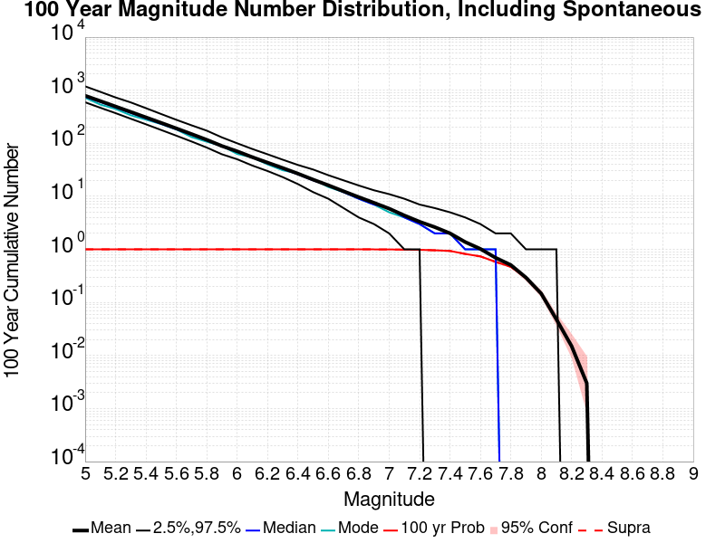
| Mag | Mean | 2.5 %ile | 97.5 %ile | Median | Mode | 100 yr Probability | 100 yr Prob 95% Conf | 100 yr Supra-Seis Prob |
|---|---|---|---|---|---|---|---|---|
| M≥5 | 788.258 | 592.000 | 1183.000 | 755.000 | 723.000 | 1.000 (100.00%) | [99.52% 100.00%] | 1.000 (100.00%) |
| M≥5.1 | 624.479 | 467.000 | 932.000 | 600.000 | 536.000 | 1.000 (100.00%) | [99.52% 100.00%] | 1.000 (100.00%) |
| M≥5.2 | 493.797 | 370.000 | 731.000 | 475.000 | 444.000 | 1.000 (100.00%) | [99.52% 100.00%] | 1.000 (100.00%) |
| M≥5.3 | 389.998 | 290.000 | 589.000 | 374.000 | 337.000 | 1.000 (100.00%) | [99.52% 100.00%] | 1.000 (100.00%) |
| M≥5.4 | 307.819 | 228.000 | 459.000 | 295.000 | 279.000 | 1.000 (100.00%) | [99.52% 100.00%] | 1.000 (100.00%) |
| M≥5.5 | 242.725 | 178.000 | 356.000 | 233.000 | 230.000 | 1.000 (100.00%) | [99.52% 100.00%] | 1.000 (100.00%) |
| M≥5.6 | 190.676 | 139.000 | 277.000 | 184.000 | 182.000 | 1.000 (100.00%) | [99.52% 100.00%] | 1.000 (100.00%) |
| M≥5.7 | 149.233 | 108.000 | 218.000 | 144.000 | 131.000 | 1.000 (100.00%) | [99.52% 100.00%] | 1.000 (100.00%) |
| M≥5.8 | 116.381 | 83.000 | 173.000 | 113.000 | 107.000 | 1.000 (100.00%) | [99.52% 100.00%] | 1.000 (100.00%) |
| M≥5.9 | 88.788 | 62.000 | 129.000 | 87.000 | 89.000 | 1.000 (100.00%) | [99.52% 100.00%] | 1.000 (100.00%) |
| M≥6 | 70.595 | 50.000 | 100.000 | 69.000 | 63.000 | 1.000 (100.00%) | [99.52% 100.00%] | 1.000 (100.00%) |
| M≥6.1 | 54.707 | 38.000 | 78.000 | 54.000 | 54.000 | 1.000 (100.00%) | [99.52% 100.00%] | 1.000 (100.00%) |
| M≥6.2 | 43.185 | 30.000 | 62.000 | 42.000 | 40.000 | 1.000 (100.00%) | [99.52% 100.00%] | 1.000 (100.00%) |
| M≥6.3 | 34.184 | 23.000 | 49.000 | 33.000 | 31.000 | 1.000 (100.00%) | [99.52% 100.00%] | 1.000 (100.00%) |
| M≥6.4 | 26.768 | 17.000 | 39.000 | 26.000 | 27.000 | 1.000 (100.00%) | [99.52% 100.00%] | 1.000 (100.00%) |
| M≥6.5 | 20.629 | 12.000 | 32.000 | 20.000 | 21.000 | 1.000 (100.00%) | [99.52% 100.00%] | 1.000 (100.00%) |
| M≥6.6 | 16.143 | 9.000 | 25.000 | 16.000 | 15.000 | 1.000 (100.00%) | [99.52% 100.00%] | 1.000 (100.00%) |
| M≥6.7 | 12.452 | 6.000 | 20.000 | 12.000 | 12.000 | 1.000 (100.00%) | [99.52% 100.00%] | 1.000 (100.00%) |
| M≥6.8 | 9.659 | 4.000 | 16.000 | 9.000 | 9.000 | 1.000 (100.00%) | [99.52% 100.00%] | 1.000 (100.00%) |
| M≥6.9 | 7.547 | 3.000 | 13.000 | 7.000 | 7.000 | 1.000 (100.00%) | [99.52% 100.00%] | 1.000 (100.00%) |
| M≥7 | 5.860 | 2.000 | 11.000 | 6.000 | 5.000 | 0.998 (99.80%) | [99.20% 99.97%] | 0.998 (99.80%) |
| M≥7.1 | 4.361 | 1.000 | 9.000 | 4.000 | 4.000 | 0.988 (98.80%) | [97.85% 99.35%] | 0.987 (98.70%) |
| M≥7.2 | 3.320 | 1.000 | 7.000 | 3.000 | 3.000 | 0.982 (98.20%) | [97.11% 98.90%] | 0.980 (98.00%) |
| M≥7.3 | 2.628 | 0.000 | 6.000 | 2.000 | 2.000 | 0.963 (96.30%) | [94.88% 97.35%] | 0.961 (96.10%) |
| M≥7.4 | 2.008 | 0.000 | 5.000 | 2.000 | 2.000 | 0.936 (93.60%) | [91.85% 95.00%] | 0.935 (93.50%) |
| M≥7.5 | 1.376 | 0.000 | 4.000 | 1.000 | 1.000 | 0.821 (82.10%) | [79.55% 84.40%] | 0.821 (82.10%) |
| M≥7.6 | 1.022 | 0.000 | 3.000 | 1.000 | 1.000 | 0.737 (73.70%) | [70.83% 76.38%] | 0.737 (73.70%) |
| M≥7.7 | 0.695 | 0.000 | 2.000 | 1.000 | 1.000 | 0.583 (58.30%) | [55.17% 61.37%] | 0.582 (58.20%) |
| M≥7.8 | 0.508 | 0.000 | 2.000 | 0.000 | 0.000 | 0.470 (47.00%) | [43.87% 50.15%] | 0.468 (46.80%) |
| M≥7.9 | 0.294 | 0.000 | 1.000 | 0.000 | 0.000 | 0.288 (28.80%) | [26.03% 31.73%] | 0.288 (28.80%) |
| M≥8 | 0.147 | 0.000 | 1.000 | 0.000 | 0.000 | 0.147 (14.70%) | [12.59% 17.08%] | 0.147 (14.70%) |
| M≥8.1 | 0.048 | 0.000 | 1.000 | 0.000 | 0.000 | 0.048 (4.80%) | [3.60% 6.36%] | 0.048 (4.80%) |
| M≥8.2 | 0.015 | 0.000 | 0.000 | 0.000 | 0.000 | 0.015 (1.50%) | [0.87% 2.52%] | 0.015 (1.50%) |
| M≥8.3 | 3.00E-3 | 0.000 | 0.000 | 0.000 | 0.000 | 3.00E-3 (0.30%) | [0.08% 0.95%] | 3.00E-3 (0.30%) |
| M≥8.4 | 0.000 | 0.000 | 0.000 | 0.000 | 0.000 | 0.000 (0.00%) | [0.00% 0.48%] | 0.000 (0.00%) |
| M≥8.5 | 0.000 | 0.000 | 0.000 | 0.000 | 0.000 | 0.000 (0.00%) | [0.00% 0.48%] | 0.000 (0.00%) |
| M≥8.6 | 0.000 | 0.000 | 0.000 | 0.000 | 0.000 | 0.000 (0.00%) | [0.00% 0.48%] | 0.000 (0.00%) |
| M≥8.7 | 0.000 | 0.000 | 0.000 | 0.000 | 0.000 | 0.000 (0.00%) | [0.00% 0.48%] | 0.000 (0.00%) |
| M≥8.8 | 0.000 | 0.000 | 0.000 | 0.000 | 0.000 | 0.000 (0.00%) | [0.00% 0.48%] | 0.000 (0.00%) |
| M≥8.9 | 0.000 | 0.000 | 0.000 | 0.000 | 0.000 | 0.000 (0.00%) | [0.00% 0.48%] | 0.000 (0.00%) |
| M≥9 | 0.000 | 0.000 | 0.000 | 0.000 | 0.000 | 0.000 (0.00%) | [0.00% 0.48%] | 0.000 (0.00%) |
Note: This section only includes triggered events, spontaneous were calculated but filtered out here
Legend
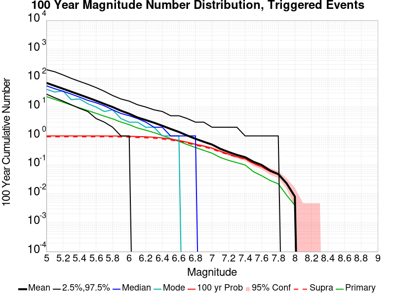
| Mag | Mean | 2.5 %ile | 97.5 %ile | Median | Mode | 100 yr Probability | 100 yr Prob 95% Conf | 100 yr Supra-Seis Prob | Primary Aftershocks Mean |
|---|---|---|---|---|---|---|---|---|---|
| M≥5 | 68.276 | 28.000 | 196.000 | 54.000 | 41.000 | 1.000 (100.00%) | [99.52% 100.00%] | 0.934 (93.40%) | 22.952 |
| M≥5.1 | 54.105 | 21.000 | 166.000 | 43.000 | 33.000 | 1.000 (100.00%) | [99.52% 100.00%] | 0.934 (93.40%) | 18.359 |
| M≥5.2 | 42.948 | 16.000 | 129.000 | 35.000 | 36.000 | 1.000 (100.00%) | [99.52% 100.00%] | 0.934 (93.40%) | 14.708 |
| M≥5.3 | 33.889 | 12.000 | 98.000 | 28.000 | 18.000 | 1.000 (100.00%) | [99.52% 100.00%] | 0.934 (93.40%) | 11.701 |
| M≥5.4 | 26.786 | 9.000 | 77.000 | 22.000 | 19.000 | 1.000 (100.00%) | [99.52% 100.00%] | 0.934 (93.40%) | 9.371 |
| M≥5.5 | 21.120 | 7.000 | 61.000 | 17.000 | 13.000 | 1.000 (100.00%) | [99.52% 100.00%] | 0.934 (93.40%) | 7.538 |
| M≥5.6 | 16.548 | 4.000 | 47.000 | 14.000 | 10.000 | 1.000 (100.00%) | [99.52% 100.00%] | 0.934 (93.40%) | 6.048 |
| M≥5.7 | 12.802 | 3.000 | 35.000 | 11.000 | 7.000 | 1.000 (100.00%) | [99.52% 100.00%] | 0.934 (93.40%) | 4.822 |
| M≥5.8 | 9.976 | 2.000 | 25.000 | 8.000 | 8.000 | 0.998 (99.80%) | [99.20% 99.97%] | 0.934 (93.40%) | 3.906 |
| M≥5.9 | 7.463 | 1.000 | 19.000 | 6.000 | 4.000 | 0.991 (99.10%) | [98.23% 99.56%] | 0.924 (92.40%) | 3.022 |
| M≥6 | 5.853 | 1.000 | 16.000 | 5.000 | 3.000 | 0.980 (98.00%) | [96.87% 98.74%] | 0.918 (91.80%) | 2.453 |
| M≥6.1 | 4.358 | 0.000 | 12.000 | 4.000 | 3.000 | 0.952 (95.20%) | [93.64% 96.40%] | 0.878 (87.80%) | 1.887 |
| M≥6.2 | 3.544 | 0.000 | 10.000 | 3.000 | 2.000 | 0.933 (93.30%) | [91.52% 94.73%] | 0.862 (86.20%) | 1.578 |
| M≥6.3 | 2.863 | 0.000 | 8.000 | 2.000 | 2.000 | 0.902 (90.20%) | [88.15% 91.94%] | 0.834 (83.40%) | 1.303 |
| M≥6.4 | 2.247 | 0.000 | 7.000 | 2.000 | 1.000 | 0.851 (85.10%) | [82.71% 87.22%] | 0.782 (78.20%) | 1.040 |
| M≥6.5 | 1.747 | 0.000 | 5.000 | 1.000 | 1.000 | 0.778 (77.80%) | [75.07% 80.31%] | 0.716 (71.60%) | 0.808 |
| M≥6.6 | 1.375 | 0.000 | 5.000 | 1.000 | 1.000 | 0.698 (69.80%) | [66.83% 72.61%] | 0.657 (65.70%) | 0.652 |
| M≥6.7 | 1.039 | 0.000 | 4.000 | 1.000 | 0.000 | 0.606 (60.60%) | [57.49% 63.63%] | 0.569 (56.90%) | 0.504 |
| M≥6.8 | 0.797 | 0.000 | 3.000 | 1.000 | 0.000 | 0.514 (51.40%) | [48.25% 54.54%] | 0.479 (47.90%) | 0.398 |
| M≥6.9 | 0.629 | 0.000 | 3.000 | 0.000 | 0.000 | 0.445 (44.50%) | [41.40% 47.65%] | 0.415 (41.50%) | 0.317 |
| M≥7 | 0.503 | 0.000 | 2.000 | 0.000 | 0.000 | 0.377 (37.70%) | [34.70% 40.80%] | 0.354 (35.40%) | 0.253 |
| M≥7.1 | 0.359 | 0.000 | 2.000 | 0.000 | 0.000 | 0.296 (29.60%) | [26.80% 32.55%] | 0.275 (27.50%) | 0.180 |
| M≥7.2 | 0.278 | 0.000 | 2.000 | 0.000 | 0.000 | 0.236 (23.60%) | [21.02% 26.38%] | 0.226 (22.60%) | 0.143 |
| M≥7.3 | 0.221 | 0.000 | 2.000 | 0.000 | 0.000 | 0.191 (19.10%) | [16.74% 21.71%] | 0.186 (18.60%) | 0.119 |
| M≥7.4 | 0.184 | 0.000 | 1.000 | 0.000 | 0.000 | 0.162 (16.20%) | [14.00% 18.66%] | 0.159 (15.90%) | 0.099 |
| M≥7.5 | 0.128 | 0.000 | 1.000 | 0.000 | 0.000 | 0.112 (11.20%) | [9.35% 13.36%] | 0.111 (11.10%) | 0.058 |
| M≥7.6 | 0.099 | 0.000 | 1.000 | 0.000 | 0.000 | 0.086 (8.60%) | [6.97% 10.55%] | 0.086 (8.60%) | 0.042 |
| M≥7.7 | 0.064 | 0.000 | 1.000 | 0.000 | 0.000 | 0.059 (5.90%) | [4.56% 7.59%] | 0.059 (5.90%) | 0.029 |
| M≥7.8 | 0.048 | 0.000 | 1.000 | 0.000 | 0.000 | 0.046 (4.60%) | [3.42% 6.14%] | 0.046 (4.60%) | 0.022 |
| M≥7.9 | 0.023 | 0.000 | 0.000 | 0.000 | 0.000 | 0.023 (2.30%) | [1.50% 3.49%] | 0.023 (2.30%) | 9.00E-3 |
| M≥8 | 8.00E-3 | 0.000 | 0.000 | 0.000 | 0.000 | 8.00E-3 (0.80%) | [0.37% 1.64%] | 8.00E-3 (0.80%) | 4.00E-3 |
| M≥8.1 | 0.000 | 0.000 | 0.000 | 0.000 | 0.000 | 0.000 (0.00%) | [0.00% 0.48%] | 0.000 (0.00%) | 0.000 |
| M≥8.2 | 0.000 | 0.000 | 0.000 | 0.000 | 0.000 | 0.000 (0.00%) | [0.00% 0.48%] | 0.000 (0.00%) | 0.000 |
| M≥8.3 | 0.000 | 0.000 | 0.000 | 0.000 | 0.000 | 0.000 (0.00%) | [0.00% 0.48%] | 0.000 (0.00%) | 0.000 |
| M≥8.4 | 0.000 | 0.000 | 0.000 | 0.000 | 0.000 | 0.000 (0.00%) | [0.00% 0.48%] | 0.000 (0.00%) | 0.000 |
| M≥8.5 | 0.000 | 0.000 | 0.000 | 0.000 | 0.000 | 0.000 (0.00%) | [0.00% 0.48%] | 0.000 (0.00%) | 0.000 |
| M≥8.6 | 0.000 | 0.000 | 0.000 | 0.000 | 0.000 | 0.000 (0.00%) | [0.00% 0.48%] | 0.000 (0.00%) | 0.000 |
| M≥8.7 | 0.000 | 0.000 | 0.000 | 0.000 | 0.000 | 0.000 (0.00%) | [0.00% 0.48%] | 0.000 (0.00%) | 0.000 |
| M≥8.8 | 0.000 | 0.000 | 0.000 | 0.000 | 0.000 | 0.000 (0.00%) | [0.00% 0.48%] | 0.000 (0.00%) | 0.000 |
| M≥8.9 | 0.000 | 0.000 | 0.000 | 0.000 | 0.000 | 0.000 (0.00%) | [0.00% 0.48%] | 0.000 (0.00%) | 0.000 |
| M≥9 | 0.000 | 0.000 | 0.000 | 0.000 | 0.000 | 0.000 (0.00%) | [0.00% 0.48%] | 0.000 (0.00%) | 0.000 |
Note: This section includes both spontaneous and triggered events
Legend
| Mag | Mean | 2.5 %ile | 97.5 %ile | Median | Mode | 30 yr Probability | 30 yr Prob 95% Conf | 30 yr Supra-Seis Prob |
|---|---|---|---|---|---|---|---|---|
| M≥5 | 238.900 | 154.000 | 481.000 | 215.000 | 190.000 | 1.000 (100.00%) | [99.52% 100.00%] | 1.000 (100.00%) |
| M≥5.1 | 189.506 | 117.000 | 383.000 | 171.000 | 157.000 | 1.000 (100.00%) | [99.52% 100.00%] | 1.000 (100.00%) |
| M≥5.2 | 149.976 | 91.000 | 302.000 | 135.000 | 131.000 | 1.000 (100.00%) | [99.52% 100.00%] | 1.000 (100.00%) |
| M≥5.3 | 118.477 | 72.000 | 237.000 | 107.000 | 96.000 | 1.000 (100.00%) | [99.52% 100.00%] | 1.000 (100.00%) |
| M≥5.4 | 93.745 | 56.000 | 187.000 | 85.000 | 82.000 | 1.000 (100.00%) | [99.52% 100.00%] | 1.000 (100.00%) |
| M≥5.5 | 74.117 | 43.000 | 147.000 | 68.000 | 65.000 | 1.000 (100.00%) | [99.52% 100.00%] | 1.000 (100.00%) |
| M≥5.6 | 58.406 | 33.000 | 116.000 | 54.000 | 57.000 | 1.000 (100.00%) | [99.52% 100.00%] | 1.000 (100.00%) |
| M≥5.7 | 45.790 | 25.000 | 87.000 | 43.000 | 37.000 | 1.000 (100.00%) | [99.52% 100.00%] | 1.000 (100.00%) |
| M≥5.8 | 35.875 | 20.000 | 68.000 | 34.000 | 31.000 | 1.000 (100.00%) | [99.52% 100.00%] | 1.000 (100.00%) |
| M≥5.9 | 27.478 | 14.000 | 52.000 | 26.000 | 22.000 | 1.000 (100.00%) | [99.52% 100.00%] | 1.000 (100.00%) |
| M≥6 | 22.015 | 11.000 | 40.000 | 21.000 | 19.000 | 1.000 (100.00%) | [99.52% 100.00%] | 1.000 (100.00%) |
| M≥6.1 | 17.157 | 8.000 | 31.000 | 16.000 | 16.000 | 1.000 (100.00%) | [99.52% 100.00%] | 1.000 (100.00%) |
| M≥6.2 | 13.603 | 6.000 | 25.000 | 13.000 | 12.000 | 1.000 (100.00%) | [99.52% 100.00%] | 1.000 (100.00%) |
| M≥6.3 | 10.855 | 5.000 | 20.000 | 10.000 | 9.000 | 1.000 (100.00%) | [99.52% 100.00%] | 1.000 (100.00%) |
| M≥6.4 | 8.506 | 3.000 | 16.000 | 8.000 | 8.000 | 1.000 (100.00%) | [99.52% 100.00%] | 0.997 (99.70%) |
| M≥6.5 | 6.561 | 2.000 | 13.000 | 6.000 | 6.000 | 1.000 (100.00%) | [99.52% 100.00%] | 0.992 (99.20%) |
| M≥6.6 | 5.136 | 1.000 | 11.000 | 5.000 | 4.000 | 0.997 (99.70%) | [99.05% 99.92%] | 0.984 (98.40%) |
| M≥6.7 | 3.883 | 1.000 | 9.000 | 4.000 | 3.000 | 0.980 (98.00%) | [96.87% 98.74%] | 0.959 (95.90%) |
| M≥6.8 | 3.019 | 0.000 | 7.000 | 3.000 | 3.000 | 0.951 (95.10%) | [93.52% 96.32%] | 0.916 (91.60%) |
| M≥6.9 | 2.374 | 0.000 | 6.000 | 2.000 | 2.000 | 0.898 (89.80%) | [87.72% 91.57%] | 0.868 (86.80%) |
| M≥7 | 1.826 | 0.000 | 5.000 | 2.000 | 1.000 | 0.843 (84.30%) | [81.86% 86.47%] | 0.814 (81.40%) |
| M≥7.1 | 1.348 | 0.000 | 4.000 | 1.000 | 1.000 | 0.742 (74.20%) | [71.35% 76.86%] | 0.711 (71.10%) |
| M≥7.2 | 0.995 | 0.000 | 3.000 | 1.000 | 1.000 | 0.641 (64.10%) | [61.03% 67.06%] | 0.625 (62.50%) |
| M≥7.3 | 0.791 | 0.000 | 3.000 | 1.000 | 0.000 | 0.560 (56.00%) | [52.86% 59.10%] | 0.549 (54.90%) |
| M≥7.4 | 0.590 | 0.000 | 2.000 | 0.000 | 0.000 | 0.463 (46.30%) | [43.18% 49.45%] | 0.459 (45.90%) |
| M≥7.5 | 0.396 | 0.000 | 2.000 | 0.000 | 0.000 | 0.339 (33.90%) | [30.98% 36.94%] | 0.337 (33.70%) |
| M≥7.6 | 0.291 | 0.000 | 2.000 | 0.000 | 0.000 | 0.264 (26.40%) | [23.71% 29.27%] | 0.263 (26.30%) |
| M≥7.7 | 0.191 | 0.000 | 1.000 | 0.000 | 0.000 | 0.180 (18.00%) | [15.70% 20.55%] | 0.180 (18.00%) |
| M≥7.8 | 0.142 | 0.000 | 1.000 | 0.000 | 0.000 | 0.138 (13.80%) | [11.75% 16.13%] | 0.137 (13.70%) |
| M≥7.9 | 0.074 | 0.000 | 1.000 | 0.000 | 0.000 | 0.073 (7.30%) | [5.80% 9.14%] | 0.073 (7.30%) |
| M≥8 | 0.035 | 0.000 | 1.000 | 0.000 | 0.000 | 0.035 (3.50%) | [2.49% 4.89%] | 0.035 (3.50%) |
| M≥8.1 | 7.00E-3 | 0.000 | 0.000 | 0.000 | 0.000 | 7.00E-3 (0.70%) | [0.31% 1.50%] | 7.00E-3 (0.70%) |
| M≥8.2 | 3.00E-3 | 0.000 | 0.000 | 0.000 | 0.000 | 3.00E-3 (0.30%) | [0.08% 0.95%] | 3.00E-3 (0.30%) |
| M≥8.3 | 0.000 | 0.000 | 0.000 | 0.000 | 0.000 | 0.000 (0.00%) | [0.00% 0.48%] | 0.000 (0.00%) |
| M≥8.4 | 0.000 | 0.000 | 0.000 | 0.000 | 0.000 | 0.000 (0.00%) | [0.00% 0.48%] | 0.000 (0.00%) |
| M≥8.5 | 0.000 | 0.000 | 0.000 | 0.000 | 0.000 | 0.000 (0.00%) | [0.00% 0.48%] | 0.000 (0.00%) |
| M≥8.6 | 0.000 | 0.000 | 0.000 | 0.000 | 0.000 | 0.000 (0.00%) | [0.00% 0.48%] | 0.000 (0.00%) |
| M≥8.7 | 0.000 | 0.000 | 0.000 | 0.000 | 0.000 | 0.000 (0.00%) | [0.00% 0.48%] | 0.000 (0.00%) |
| M≥8.8 | 0.000 | 0.000 | 0.000 | 0.000 | 0.000 | 0.000 (0.00%) | [0.00% 0.48%] | 0.000 (0.00%) |
| M≥8.9 | 0.000 | 0.000 | 0.000 | 0.000 | 0.000 | 0.000 (0.00%) | [0.00% 0.48%] | 0.000 (0.00%) |
| M≥9 | 0.000 | 0.000 | 0.000 | 0.000 | 0.000 | 0.000 (0.00%) | [0.00% 0.48%] | 0.000 (0.00%) |
Note: This section only includes triggered events, spontaneous were calculated but filtered out here
Legend
| Mag | Mean | 2.5 %ile | 97.5 %ile | Median | Mode | 30 yr Probability | 30 yr Prob 95% Conf | 30 yr Supra-Seis Prob | Primary Aftershocks Mean |
|---|---|---|---|---|---|---|---|---|---|
| M≥5 | 31.777 | 10.000 | 95.000 | 24.000 | 19.000 | 1.000 (100.00%) | [99.52% 100.00%] | 0.740 (74.00%) | 11.656 |
| M≥5.1 | 25.209 | 8.000 | 80.000 | 19.000 | 13.000 | 1.000 (100.00%) | [99.52% 100.00%] | 0.740 (74.00%) | 9.329 |
| M≥5.2 | 19.995 | 6.000 | 64.000 | 15.000 | 13.000 | 1.000 (100.00%) | [99.52% 100.00%] | 0.740 (74.00%) | 7.439 |
| M≥5.3 | 15.728 | 4.000 | 50.000 | 12.000 | 9.000 | 1.000 (100.00%) | [99.52% 100.00%] | 0.740 (74.00%) | 5.893 |
| M≥5.4 | 12.474 | 3.000 | 39.000 | 9.000 | 8.000 | 1.000 (100.00%) | [99.52% 100.00%] | 0.740 (74.00%) | 4.772 |
| M≥5.5 | 9.806 | 1.000 | 31.000 | 8.000 | 5.000 | 0.998 (99.80%) | [99.20% 99.97%] | 0.740 (74.00%) | 3.834 |
| M≥5.6 | 7.685 | 1.000 | 24.000 | 6.000 | 6.000 | 0.993 (99.30%) | [98.50% 99.69%] | 0.740 (74.00%) | 3.057 |
| M≥5.7 | 5.945 | 0.000 | 19.000 | 5.000 | 4.000 | 0.971 (97.10%) | [95.81% 98.01%] | 0.740 (74.00%) | 2.449 |
| M≥5.8 | 4.652 | 0.000 | 14.000 | 4.000 | 3.000 | 0.952 (95.20%) | [93.64% 96.40%] | 0.740 (74.00%) | 1.990 |
| M≥5.9 | 3.456 | 0.000 | 11.000 | 3.000 | 3.000 | 0.907 (90.70%) | [88.69% 92.39%] | 0.712 (71.20%) | 1.532 |
| M≥6 | 2.687 | 0.000 | 9.000 | 2.000 | 2.000 | 0.858 (85.80%) | [83.45% 87.87%] | 0.696 (69.60%) | 1.244 |
| M≥6.1 | 1.997 | 0.000 | 7.000 | 2.000 | 1.000 | 0.790 (79.00%) | [76.31% 81.46%] | 0.645 (64.50%) | 0.960 |
| M≥6.2 | 1.643 | 0.000 | 6.000 | 1.000 | 1.000 | 0.737 (73.70%) | [70.83% 76.38%] | 0.612 (61.20%) | 0.790 |
| M≥6.3 | 1.324 | 0.000 | 5.000 | 1.000 | 0.000 | 0.661 (66.10%) | [63.06% 69.02%] | 0.560 (56.00%) | 0.638 |
| M≥6.4 | 1.037 | 0.000 | 4.000 | 1.000 | 0.000 | 0.582 (58.20%) | [55.07% 61.27%] | 0.500 (50.00%) | 0.502 |
| M≥6.5 | 0.807 | 0.000 | 3.000 | 0.000 | 0.000 | 0.499 (49.90%) | [46.76% 53.04%] | 0.433 (43.30%) | 0.391 |
| M≥6.6 | 0.639 | 0.000 | 3.000 | 0.000 | 0.000 | 0.428 (42.80%) | [39.72% 45.94%] | 0.380 (38.00%) | 0.318 |
| M≥6.7 | 0.467 | 0.000 | 2.000 | 0.000 | 0.000 | 0.342 (34.20%) | [31.28% 37.25%] | 0.310 (31.00%) | 0.239 |
| M≥6.8 | 0.347 | 0.000 | 2.000 | 0.000 | 0.000 | 0.275 (27.50%) | [24.77% 30.40%] | 0.247 (24.70%) | 0.181 |
| M≥6.9 | 0.274 | 0.000 | 2.000 | 0.000 | 0.000 | 0.232 (23.20%) | [20.64% 25.97%] | 0.212 (21.20%) | 0.144 |
| M≥7 | 0.209 | 0.000 | 1.000 | 0.000 | 0.000 | 0.181 (18.10%) | [15.79% 20.66%] | 0.169 (16.90%) | 0.106 |
| M≥7.1 | 0.147 | 0.000 | 1.000 | 0.000 | 0.000 | 0.135 (13.50%) | [11.47% 15.81%] | 0.124 (12.40%) | 0.075 |
| M≥7.2 | 0.109 | 0.000 | 1.000 | 0.000 | 0.000 | 0.101 (10.10%) | [8.34% 12.18%] | 0.096 (9.60%) | 0.056 |
| M≥7.3 | 0.091 | 0.000 | 1.000 | 0.000 | 0.000 | 0.085 (8.50%) | [6.88% 10.45%] | 0.083 (8.30%) | 0.048 |
| M≥7.4 | 0.075 | 0.000 | 1.000 | 0.000 | 0.000 | 0.071 (7.10%) | [5.62% 8.92%] | 0.070 (7.00%) | 0.039 |
| M≥7.5 | 0.055 | 0.000 | 1.000 | 0.000 | 0.000 | 0.051 (5.10%) | [3.86% 6.70%] | 0.051 (5.10%) | 0.023 |
| M≥7.6 | 0.042 | 0.000 | 1.000 | 0.000 | 0.000 | 0.040 (4.00%) | [2.91% 5.46%] | 0.040 (4.00%) | 0.017 |
| M≥7.7 | 0.025 | 0.000 | 0.000 | 0.000 | 0.000 | 0.025 (2.50%) | [1.66% 3.72%] | 0.025 (2.50%) | 0.013 |
| M≥7.8 | 0.020 | 0.000 | 0.000 | 0.000 | 0.000 | 0.020 (2.00%) | [1.26% 3.13%] | 0.020 (2.00%) | 0.011 |
| M≥7.9 | 0.012 | 0.000 | 0.000 | 0.000 | 0.000 | 0.012 (1.20%) | [0.65% 2.15%] | 0.012 (1.20%) | 8.00E-3 |
| M≥8 | 4.00E-3 | 0.000 | 0.000 | 0.000 | 0.000 | 4.00E-3 (0.40%) | [0.13% 1.10%] | 4.00E-3 (0.40%) | 3.00E-3 |
| M≥8.1 | 0.000 | 0.000 | 0.000 | 0.000 | 0.000 | 0.000 (0.00%) | [0.00% 0.48%] | 0.000 (0.00%) | 0.000 |
| M≥8.2 | 0.000 | 0.000 | 0.000 | 0.000 | 0.000 | 0.000 (0.00%) | [0.00% 0.48%] | 0.000 (0.00%) | 0.000 |
| M≥8.3 | 0.000 | 0.000 | 0.000 | 0.000 | 0.000 | 0.000 (0.00%) | [0.00% 0.48%] | 0.000 (0.00%) | 0.000 |
| M≥8.4 | 0.000 | 0.000 | 0.000 | 0.000 | 0.000 | 0.000 (0.00%) | [0.00% 0.48%] | 0.000 (0.00%) | 0.000 |
| M≥8.5 | 0.000 | 0.000 | 0.000 | 0.000 | 0.000 | 0.000 (0.00%) | [0.00% 0.48%] | 0.000 (0.00%) | 0.000 |
| M≥8.6 | 0.000 | 0.000 | 0.000 | 0.000 | 0.000 | 0.000 (0.00%) | [0.00% 0.48%] | 0.000 (0.00%) | 0.000 |
| M≥8.7 | 0.000 | 0.000 | 0.000 | 0.000 | 0.000 | 0.000 (0.00%) | [0.00% 0.48%] | 0.000 (0.00%) | 0.000 |
| M≥8.8 | 0.000 | 0.000 | 0.000 | 0.000 | 0.000 | 0.000 (0.00%) | [0.00% 0.48%] | 0.000 (0.00%) | 0.000 |
| M≥8.9 | 0.000 | 0.000 | 0.000 | 0.000 | 0.000 | 0.000 (0.00%) | [0.00% 0.48%] | 0.000 (0.00%) | 0.000 |
| M≥9 | 0.000 | 0.000 | 0.000 | 0.000 | 0.000 | 0.000 (0.00%) | [0.00% 0.48%] | 0.000 (0.00%) | 0.000 |
Note: This section includes both spontaneous and triggered events
Legend
| Mag | Mean | 2.5 %ile | 97.5 %ile | Median | Mode | 10 yr Probability | 10 yr Prob 95% Conf | 10 yr Supra-Seis Prob |
|---|---|---|---|---|---|---|---|---|
| M≥5 | 78.051 | 42.000 | 172.000 | 69.000 | 69.000 | 1.000 (100.00%) | [99.52% 100.00%] | 0.972 (97.20%) |
| M≥5.1 | 62.084 | 32.000 | 139.000 | 54.000 | 56.000 | 1.000 (100.00%) | [99.52% 100.00%] | 0.972 (97.20%) |
| M≥5.2 | 49.145 | 25.000 | 109.000 | 43.000 | 37.000 | 1.000 (100.00%) | [99.52% 100.00%] | 0.972 (97.20%) |
| M≥5.3 | 38.777 | 19.000 | 90.000 | 34.000 | 28.000 | 1.000 (100.00%) | [99.52% 100.00%] | 0.972 (97.20%) |
| M≥5.4 | 30.695 | 14.000 | 73.000 | 27.000 | 21.000 | 1.000 (100.00%) | [99.52% 100.00%] | 0.972 (97.20%) |
| M≥5.5 | 24.366 | 10.000 | 56.000 | 21.000 | 17.000 | 1.000 (100.00%) | [99.52% 100.00%] | 0.972 (97.20%) |
| M≥5.6 | 19.256 | 8.000 | 46.000 | 17.000 | 16.000 | 1.000 (100.00%) | [99.52% 100.00%] | 0.972 (97.20%) |
| M≥5.7 | 15.117 | 5.000 | 35.000 | 14.000 | 12.000 | 1.000 (100.00%) | [99.52% 100.00%] | 0.972 (97.20%) |
| M≥5.8 | 11.846 | 4.000 | 27.000 | 11.000 | 11.000 | 1.000 (100.00%) | [99.52% 100.00%] | 0.972 (97.20%) |
| M≥5.9 | 9.066 | 2.000 | 20.000 | 8.000 | 7.000 | 1.000 (100.00%) | [99.52% 100.00%] | 0.969 (96.90%) |
| M≥6 | 7.305 | 2.000 | 16.000 | 7.000 | 5.000 | 0.998 (99.80%) | [99.20% 99.97%] | 0.967 (96.70%) |
| M≥6.1 | 5.710 | 1.000 | 13.000 | 5.000 | 5.000 | 0.994 (99.40%) | [98.63% 99.76%] | 0.953 (95.30%) |
| M≥6.2 | 4.572 | 1.000 | 11.000 | 4.000 | 4.000 | 0.980 (98.00%) | [96.87% 98.74%] | 0.935 (93.50%) |
| M≥6.3 | 3.692 | 0.000 | 9.000 | 3.000 | 3.000 | 0.964 (96.40%) | [95.00% 97.43%] | 0.915 (91.50%) |
| M≥6.4 | 2.906 | 0.000 | 7.000 | 3.000 | 2.000 | 0.934 (93.40%) | [91.63% 94.82%] | 0.872 (87.20%) |
| M≥6.5 | 2.256 | 0.000 | 6.000 | 2.000 | 1.000 | 0.884 (88.40%) | [86.21% 90.29%] | 0.814 (81.40%) |
| M≥6.6 | 1.762 | 0.000 | 5.000 | 2.000 | 1.000 | 0.816 (81.60%) | [79.03% 83.93%] | 0.749 (74.90%) |
| M≥6.7 | 1.326 | 0.000 | 4.000 | 1.000 | 1.000 | 0.732 (73.20%) | [70.32% 75.90%] | 0.674 (67.40%) |
| M≥6.8 | 1.041 | 0.000 | 3.000 | 1.000 | 1.000 | 0.638 (63.80%) | [60.72% 66.77%] | 0.595 (59.50%) |
| M≥6.9 | 0.813 | 0.000 | 3.000 | 1.000 | 0.000 | 0.557 (55.70%) | [52.56% 58.80%] | 0.522 (52.20%) |
| M≥7 | 0.632 | 0.000 | 3.000 | 0.000 | 0.000 | 0.466 (46.60%) | [43.48% 49.75%] | 0.442 (44.20%) |
| M≥7.1 | 0.466 | 0.000 | 2.000 | 0.000 | 0.000 | 0.376 (37.60%) | [34.60% 40.69%] | 0.361 (36.10%) |
| M≥7.2 | 0.354 | 0.000 | 2.000 | 0.000 | 0.000 | 0.301 (30.10%) | [27.29% 33.07%] | 0.294 (29.40%) |
| M≥7.3 | 0.278 | 0.000 | 2.000 | 0.000 | 0.000 | 0.243 (24.30%) | [21.70% 27.11%] | 0.240 (24.00%) |
| M≥7.4 | 0.212 | 0.000 | 1.000 | 0.000 | 0.000 | 0.191 (19.10%) | [16.74% 21.71%] | 0.190 (19.00%) |
| M≥7.5 | 0.148 | 0.000 | 1.000 | 0.000 | 0.000 | 0.137 (13.70%) | [11.66% 16.02%] | 0.137 (13.70%) |
| M≥7.6 | 0.111 | 0.000 | 1.000 | 0.000 | 0.000 | 0.106 (10.60%) | [8.79% 12.71%] | 0.106 (10.60%) |
| M≥7.7 | 0.071 | 0.000 | 1.000 | 0.000 | 0.000 | 0.069 (6.90%) | [5.44% 8.70%] | 0.069 (6.90%) |
| M≥7.8 | 0.050 | 0.000 | 1.000 | 0.000 | 0.000 | 0.050 (5.00%) | [3.77% 6.59%] | 0.050 (5.00%) |
| M≥7.9 | 0.024 | 0.000 | 0.000 | 0.000 | 0.000 | 0.024 (2.40%) | [1.58% 3.61%] | 0.024 (2.40%) |
| M≥8 | 0.011 | 0.000 | 0.000 | 0.000 | 0.000 | 0.011 (1.10%) | [0.58% 2.02%] | 0.011 (1.10%) |
| M≥8.1 | 2.00E-3 | 0.000 | 0.000 | 0.000 | 0.000 | 2.00E-3 (0.20%) | [0.03% 0.80%] | 2.00E-3 (0.20%) |
| M≥8.2 | 2.00E-3 | 0.000 | 0.000 | 0.000 | 0.000 | 2.00E-3 (0.20%) | [0.03% 0.80%] | 2.00E-3 (0.20%) |
| M≥8.3 | 0.000 | 0.000 | 0.000 | 0.000 | 0.000 | 0.000 (0.00%) | [0.00% 0.48%] | 0.000 (0.00%) |
| M≥8.4 | 0.000 | 0.000 | 0.000 | 0.000 | 0.000 | 0.000 (0.00%) | [0.00% 0.48%] | 0.000 (0.00%) |
| M≥8.5 | 0.000 | 0.000 | 0.000 | 0.000 | 0.000 | 0.000 (0.00%) | [0.00% 0.48%] | 0.000 (0.00%) |
| M≥8.6 | 0.000 | 0.000 | 0.000 | 0.000 | 0.000 | 0.000 (0.00%) | [0.00% 0.48%] | 0.000 (0.00%) |
| M≥8.7 | 0.000 | 0.000 | 0.000 | 0.000 | 0.000 | 0.000 (0.00%) | [0.00% 0.48%] | 0.000 (0.00%) |
| M≥8.8 | 0.000 | 0.000 | 0.000 | 0.000 | 0.000 | 0.000 (0.00%) | [0.00% 0.48%] | 0.000 (0.00%) |
| M≥8.9 | 0.000 | 0.000 | 0.000 | 0.000 | 0.000 | 0.000 (0.00%) | [0.00% 0.48%] | 0.000 (0.00%) |
| M≥9 | 0.000 | 0.000 | 0.000 | 0.000 | 0.000 | 0.000 (0.00%) | [0.00% 0.48%] | 0.000 (0.00%) |
Note: This section only includes triggered events, spontaneous were calculated but filtered out here
Legend
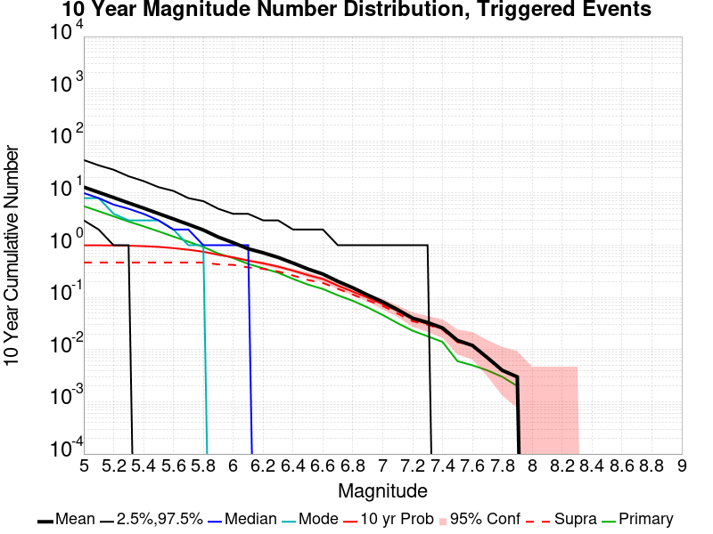
| Mag | Mean | 2.5 %ile | 97.5 %ile | Median | Mode | 10 yr Probability | 10 yr Prob 95% Conf | 10 yr Supra-Seis Prob | Primary Aftershocks Mean |
|---|---|---|---|---|---|---|---|---|---|
| M≥5 | 13.023 | 3.000 | 43.000 | 10.000 | 8.000 | 1.000 (100.00%) | [99.52% 100.00%] | 0.466 (46.60%) | 5.618 |
| M≥5.1 | 10.328 | 2.000 | 34.000 | 8.000 | 8.000 | 0.997 (99.70%) | [99.05% 99.92%] | 0.466 (46.60%) | 4.489 |
| M≥5.2 | 8.198 | 1.000 | 28.000 | 6.000 | 4.000 | 0.990 (99.00%) | [98.10% 99.49%] | 0.466 (46.60%) | 3.569 |
| M≥5.3 | 6.470 | 1.000 | 21.000 | 5.000 | 3.000 | 0.981 (98.10%) | [96.99% 98.82%] | 0.466 (46.60%) | 2.846 |
| M≥5.4 | 5.148 | 0.000 | 17.000 | 4.000 | 3.000 | 0.961 (96.10%) | [94.66% 97.18%] | 0.466 (46.60%) | 2.307 |
| M≥5.5 | 4.047 | 0.000 | 13.000 | 3.000 | 3.000 | 0.930 (93.00%) | [91.19% 94.47%] | 0.466 (46.60%) | 1.847 |
| M≥5.6 | 3.188 | 0.000 | 11.000 | 2.000 | 2.000 | 0.880 (88.00%) | [85.79% 89.92%] | 0.466 (46.60%) | 1.465 |
| M≥5.7 | 2.510 | 0.000 | 8.000 | 2.000 | 1.000 | 0.820 (82.00%) | [79.45% 84.30%] | 0.466 (46.60%) | 1.171 |
| M≥5.8 | 1.959 | 0.000 | 7.000 | 1.000 | 1.000 | 0.751 (75.10%) | [72.28% 77.73%] | 0.466 (46.60%) | 0.927 |
| M≥5.9 | 1.434 | 0.000 | 5.000 | 1.000 | 0.000 | 0.656 (65.60%) | [62.55% 68.53%] | 0.430 (43.00%) | 0.695 |
| M≥6 | 1.120 | 0.000 | 4.000 | 1.000 | 0.000 | 0.586 (58.60%) | [55.47% 61.66%] | 0.421 (42.10%) | 0.569 |
| M≥6.1 | 0.855 | 0.000 | 4.000 | 1.000 | 0.000 | 0.507 (50.70%) | [47.55% 53.84%] | 0.376 (37.60%) | 0.438 |
| M≥6.2 | 0.717 | 0.000 | 3.000 | 0.000 | 0.000 | 0.451 (45.10%) | [41.99% 48.25%] | 0.353 (35.30%) | 0.362 |
| M≥6.3 | 0.585 | 0.000 | 3.000 | 0.000 | 0.000 | 0.390 (39.00%) | [35.98% 42.11%] | 0.314 (31.40%) | 0.298 |
| M≥6.4 | 0.456 | 0.000 | 2.000 | 0.000 | 0.000 | 0.326 (32.60%) | [29.72% 35.62%] | 0.263 (26.30%) | 0.226 |
| M≥6.5 | 0.350 | 0.000 | 2.000 | 0.000 | 0.000 | 0.268 (26.80%) | [24.10% 29.68%] | 0.216 (21.60%) | 0.176 |
| M≥6.6 | 0.280 | 0.000 | 2.000 | 0.000 | 0.000 | 0.225 (22.50%) | [19.97% 25.24%] | 0.189 (18.90%) | 0.145 |
| M≥6.7 | 0.203 | 0.000 | 1.000 | 0.000 | 0.000 | 0.168 (16.80%) | [14.56% 19.30%] | 0.146 (14.60%) | 0.110 |
| M≥6.8 | 0.153 | 0.000 | 1.000 | 0.000 | 0.000 | 0.129 (12.90%) | [10.92% 15.17%] | 0.113 (11.30%) | 0.086 |
| M≥6.9 | 0.111 | 0.000 | 1.000 | 0.000 | 0.000 | 0.099 (9.90%) | [8.15% 11.96%] | 0.088 (8.80%) | 0.064 |
| M≥7 | 0.082 | 0.000 | 1.000 | 0.000 | 0.000 | 0.074 (7.40%) | [5.89% 9.25%] | 0.069 (6.90%) | 0.046 |
| M≥7.1 | 0.058 | 0.000 | 1.000 | 0.000 | 0.000 | 0.055 (5.50%) | [4.21% 7.15%] | 0.049 (4.90%) | 0.032 |
| M≥7.2 | 0.040 | 0.000 | 1.000 | 0.000 | 0.000 | 0.038 (3.80%) | [2.74% 5.23%] | 0.035 (3.50%) | 0.023 |
| M≥7.3 | 0.033 | 0.000 | 1.000 | 0.000 | 0.000 | 0.031 (3.10%) | [2.15% 4.42%] | 0.030 (3.00%) | 0.018 |
| M≥7.4 | 0.026 | 0.000 | 0.000 | 0.000 | 0.000 | 0.025 (2.50%) | [1.66% 3.72%] | 0.024 (2.40%) | 0.014 |
| M≥7.5 | 0.015 | 0.000 | 0.000 | 0.000 | 0.000 | 0.014 (1.40%) | [0.80% 2.40%] | 0.014 (1.40%) | 6.00E-3 |
| M≥7.6 | 0.012 | 0.000 | 0.000 | 0.000 | 0.000 | 0.012 (1.20%) | [0.65% 2.15%] | 0.012 (1.20%) | 5.00E-3 |
| M≥7.7 | 7.00E-3 | 0.000 | 0.000 | 0.000 | 0.000 | 7.00E-3 (0.70%) | [0.31% 1.50%] | 7.00E-3 (0.70%) | 4.00E-3 |
| M≥7.8 | 4.00E-3 | 0.000 | 0.000 | 0.000 | 0.000 | 4.00E-3 (0.40%) | [0.13% 1.10%] | 4.00E-3 (0.40%) | 3.00E-3 |
| M≥7.9 | 3.00E-3 | 0.000 | 0.000 | 0.000 | 0.000 | 3.00E-3 (0.30%) | [0.08% 0.95%] | 3.00E-3 (0.30%) | 2.00E-3 |
| M≥8 | 0.000 | 0.000 | 0.000 | 0.000 | 0.000 | 0.000 (0.00%) | [0.00% 0.48%] | 0.000 (0.00%) | 0.000 |
| M≥8.1 | 0.000 | 0.000 | 0.000 | 0.000 | 0.000 | 0.000 (0.00%) | [0.00% 0.48%] | 0.000 (0.00%) | 0.000 |
| M≥8.2 | 0.000 | 0.000 | 0.000 | 0.000 | 0.000 | 0.000 (0.00%) | [0.00% 0.48%] | 0.000 (0.00%) | 0.000 |
| M≥8.3 | 0.000 | 0.000 | 0.000 | 0.000 | 0.000 | 0.000 (0.00%) | [0.00% 0.48%] | 0.000 (0.00%) | 0.000 |
| M≥8.4 | 0.000 | 0.000 | 0.000 | 0.000 | 0.000 | 0.000 (0.00%) | [0.00% 0.48%] | 0.000 (0.00%) | 0.000 |
| M≥8.5 | 0.000 | 0.000 | 0.000 | 0.000 | 0.000 | 0.000 (0.00%) | [0.00% 0.48%] | 0.000 (0.00%) | 0.000 |
| M≥8.6 | 0.000 | 0.000 | 0.000 | 0.000 | 0.000 | 0.000 (0.00%) | [0.00% 0.48%] | 0.000 (0.00%) | 0.000 |
| M≥8.7 | 0.000 | 0.000 | 0.000 | 0.000 | 0.000 | 0.000 (0.00%) | [0.00% 0.48%] | 0.000 (0.00%) | 0.000 |
| M≥8.8 | 0.000 | 0.000 | 0.000 | 0.000 | 0.000 | 0.000 (0.00%) | [0.00% 0.48%] | 0.000 (0.00%) | 0.000 |
| M≥8.9 | 0.000 | 0.000 | 0.000 | 0.000 | 0.000 | 0.000 (0.00%) | [0.00% 0.48%] | 0.000 (0.00%) | 0.000 |
| M≥9 | 0.000 | 0.000 | 0.000 | 0.000 | 0.000 | 0.000 (0.00%) | [0.00% 0.48%] | 0.000 (0.00%) | 0.000 |
Note: This section includes both spontaneous and triggered events
Legend
| Mag | Mean | 2.5 %ile | 97.5 %ile | Median | Mode | 1 yr Probability | 1 yr Prob 95% Conf | 1 yr Supra-Seis Prob |
|---|---|---|---|---|---|---|---|---|
| M≥5 | 6.889 | 1.000 | 22.000 | 5.000 | 4.000 | 0.980 (98.00%) | [96.87% 98.74%] | 0.282 (28.20%) |
| M≥5.1 | 5.486 | 0.000 | 18.000 | 4.000 | 3.000 | 0.962 (96.20%) | [94.77% 97.26%] | 0.282 (28.20%) |
| M≥5.2 | 4.346 | 0.000 | 15.000 | 3.000 | 2.000 | 0.937 (93.70%) | [91.97% 95.09%] | 0.282 (28.20%) |
| M≥5.3 | 3.428 | 0.000 | 12.000 | 3.000 | 2.000 | 0.898 (89.80%) | [87.72% 91.57%] | 0.282 (28.20%) |
| M≥5.4 | 2.732 | 0.000 | 10.000 | 2.000 | 1.000 | 0.860 (86.00%) | [83.66% 88.06%] | 0.282 (28.20%) |
| M≥5.5 | 2.134 | 0.000 | 7.000 | 2.000 | 1.000 | 0.784 (78.40%) | [75.69% 80.89%] | 0.282 (28.20%) |
| M≥5.6 | 1.703 | 0.000 | 6.000 | 1.000 | 0.000 | 0.702 (70.20%) | [67.24% 73.00%] | 0.282 (28.20%) |
| M≥5.7 | 1.383 | 0.000 | 5.000 | 1.000 | 0.000 | 0.637 (63.70%) | [60.62% 66.67%] | 0.282 (28.20%) |
| M≥5.8 | 1.063 | 0.000 | 4.000 | 1.000 | 0.000 | 0.551 (55.10%) | [51.95% 58.21%] | 0.281 (28.10%) |
| M≥5.9 | 0.816 | 0.000 | 4.000 | 0.000 | 0.000 | 0.468 (46.80%) | [43.68% 49.95%] | 0.272 (27.20%) |
| M≥6 | 0.653 | 0.000 | 3.000 | 0.000 | 0.000 | 0.405 (40.50%) | [37.45% 43.62%] | 0.265 (26.50%) |
| M≥6.1 | 0.518 | 0.000 | 3.000 | 0.000 | 0.000 | 0.352 (35.20%) | [32.25% 38.26%] | 0.245 (24.50%) |
| M≥6.2 | 0.413 | 0.000 | 2.000 | 0.000 | 0.000 | 0.298 (29.80%) | [27.00% 32.76%] | 0.222 (22.20%) |
| M≥6.3 | 0.337 | 0.000 | 2.000 | 0.000 | 0.000 | 0.266 (26.60%) | [23.91% 29.48%] | 0.204 (20.40%) |
| M≥6.4 | 0.252 | 0.000 | 2.000 | 0.000 | 0.000 | 0.212 (21.20%) | [18.73% 23.89%] | 0.169 (16.90%) |
| M≥6.5 | 0.198 | 0.000 | 1.000 | 0.000 | 0.000 | 0.172 (17.20%) | [14.94% 19.72%] | 0.139 (13.90%) |
| M≥6.6 | 0.156 | 0.000 | 1.000 | 0.000 | 0.000 | 0.143 (14.30%) | [12.22% 16.66%] | 0.118 (11.80%) |
| M≥6.7 | 0.121 | 0.000 | 1.000 | 0.000 | 0.000 | 0.114 (11.40%) | [9.53% 13.57%] | 0.098 (9.80%) |
| M≥6.8 | 0.094 | 0.000 | 1.000 | 0.000 | 0.000 | 0.088 (8.80%) | [7.15% 10.77%] | 0.081 (8.10%) |
| M≥6.9 | 0.067 | 0.000 | 1.000 | 0.000 | 0.000 | 0.064 (6.40%) | [5.00% 8.15%] | 0.061 (6.10%) |
| M≥7 | 0.057 | 0.000 | 1.000 | 0.000 | 0.000 | 0.054 (5.40%) | [4.12% 7.04%] | 0.051 (5.10%) |
| M≥7.1 | 0.042 | 0.000 | 1.000 | 0.000 | 0.000 | 0.041 (4.10%) | [2.99% 5.57%] | 0.038 (3.80%) |
| M≥7.2 | 0.030 | 0.000 | 1.000 | 0.000 | 0.000 | 0.029 (2.90%) | [1.99% 4.19%] | 0.029 (2.90%) |
| M≥7.3 | 0.023 | 0.000 | 0.000 | 0.000 | 0.000 | 0.022 (2.20%) | [1.42% 3.37%] | 0.022 (2.20%) |
| M≥7.4 | 0.016 | 0.000 | 0.000 | 0.000 | 0.000 | 0.015 (1.50%) | [0.87% 2.52%] | 0.015 (1.50%) |
| M≥7.5 | 0.013 | 0.000 | 0.000 | 0.000 | 0.000 | 0.013 (1.30%) | [0.72% 2.27%] | 0.013 (1.30%) |
| M≥7.6 | 0.010 | 0.000 | 0.000 | 0.000 | 0.000 | 0.010 (1.00%) | [0.51% 1.90%] | 0.010 (1.00%) |
| M≥7.7 | 7.00E-3 | 0.000 | 0.000 | 0.000 | 0.000 | 7.00E-3 (0.70%) | [0.31% 1.50%] | 7.00E-3 (0.70%) |
| M≥7.8 | 5.00E-3 | 0.000 | 0.000 | 0.000 | 0.000 | 5.00E-3 (0.50%) | [0.18% 1.23%] | 5.00E-3 (0.50%) |
| M≥7.9 | 4.00E-3 | 0.000 | 0.000 | 0.000 | 0.000 | 4.00E-3 (0.40%) | [0.13% 1.10%] | 4.00E-3 (0.40%) |
| M≥8 | 0.000 | 0.000 | 0.000 | 0.000 | 0.000 | 0.000 (0.00%) | [0.00% 0.48%] | 0.000 (0.00%) |
| M≥8.1 | 0.000 | 0.000 | 0.000 | 0.000 | 0.000 | 0.000 (0.00%) | [0.00% 0.48%] | 0.000 (0.00%) |
| M≥8.2 | 0.000 | 0.000 | 0.000 | 0.000 | 0.000 | 0.000 (0.00%) | [0.00% 0.48%] | 0.000 (0.00%) |
| M≥8.3 | 0.000 | 0.000 | 0.000 | 0.000 | 0.000 | 0.000 (0.00%) | [0.00% 0.48%] | 0.000 (0.00%) |
| M≥8.4 | 0.000 | 0.000 | 0.000 | 0.000 | 0.000 | 0.000 (0.00%) | [0.00% 0.48%] | 0.000 (0.00%) |
| M≥8.5 | 0.000 | 0.000 | 0.000 | 0.000 | 0.000 | 0.000 (0.00%) | [0.00% 0.48%] | 0.000 (0.00%) |
| M≥8.6 | 0.000 | 0.000 | 0.000 | 0.000 | 0.000 | 0.000 (0.00%) | [0.00% 0.48%] | 0.000 (0.00%) |
| M≥8.7 | 0.000 | 0.000 | 0.000 | 0.000 | 0.000 | 0.000 (0.00%) | [0.00% 0.48%] | 0.000 (0.00%) |
| M≥8.8 | 0.000 | 0.000 | 0.000 | 0.000 | 0.000 | 0.000 (0.00%) | [0.00% 0.48%] | 0.000 (0.00%) |
| M≥8.9 | 0.000 | 0.000 | 0.000 | 0.000 | 0.000 | 0.000 (0.00%) | [0.00% 0.48%] | 0.000 (0.00%) |
| M≥9 | 0.000 | 0.000 | 0.000 | 0.000 | 0.000 | 0.000 (0.00%) | [0.00% 0.48%] | 0.000 (0.00%) |
Note: This section only includes triggered events, spontaneous were calculated but filtered out here
Legend
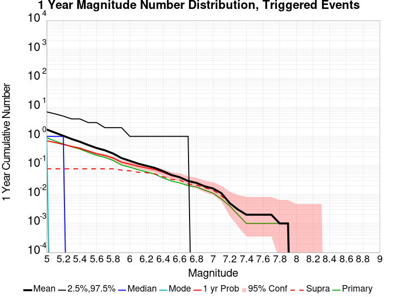
| Mag | Mean | 2.5 %ile | 97.5 %ile | Median | Mode | 1 yr Probability | 1 yr Prob 95% Conf | 1 yr Supra-Seis Prob | Primary Aftershocks Mean |
|---|---|---|---|---|---|---|---|---|---|
| M≥5 | 1.727 | 0.000 | 7.000 | 1.000 | 1.000 | 0.707 (70.70%) | [67.75% 73.49%] | 0.076 (7.60%) | 0.901 |
| M≥5.1 | 1.350 | 0.000 | 6.000 | 1.000 | 0.000 | 0.616 (61.60%) | [58.50% 64.61%] | 0.076 (7.60%) | 0.692 |
| M≥5.2 | 1.049 | 0.000 | 5.000 | 1.000 | 0.000 | 0.529 (52.90%) | [49.75% 56.03%] | 0.076 (7.60%) | 0.550 |
| M≥5.3 | 0.814 | 0.000 | 4.000 | 0.000 | 0.000 | 0.451 (45.10%) | [41.99% 48.25%] | 0.076 (7.60%) | 0.442 |
| M≥5.4 | 0.654 | 0.000 | 4.000 | 0.000 | 0.000 | 0.391 (39.10%) | [36.07% 42.21%] | 0.076 (7.60%) | 0.366 |
| M≥5.5 | 0.504 | 0.000 | 3.000 | 0.000 | 0.000 | 0.313 (31.30%) | [28.45% 34.29%] | 0.076 (7.60%) | 0.283 |
| M≥5.6 | 0.398 | 0.000 | 3.000 | 0.000 | 0.000 | 0.252 (25.20%) | [22.56% 28.03%] | 0.076 (7.60%) | 0.223 |
| M≥5.7 | 0.332 | 0.000 | 2.000 | 0.000 | 0.000 | 0.220 (22.00%) | [19.49% 24.72%] | 0.076 (7.60%) | 0.189 |
| M≥5.8 | 0.256 | 0.000 | 2.000 | 0.000 | 0.000 | 0.179 (17.90%) | [15.60% 20.45%] | 0.076 (7.60%) | 0.148 |
| M≥5.9 | 0.179 | 0.000 | 2.000 | 0.000 | 0.000 | 0.129 (12.90%) | [10.92% 15.17%] | 0.069 (6.90%) | 0.103 |
| M≥6 | 0.144 | 0.000 | 1.000 | 0.000 | 0.000 | 0.111 (11.10%) | [9.25% 13.25%] | 0.065 (6.50%) | 0.087 |
| M≥6.1 | 0.115 | 0.000 | 1.000 | 0.000 | 0.000 | 0.094 (9.40%) | [7.70% 11.42%] | 0.058 (5.80%) | 0.071 |
| M≥6.2 | 0.097 | 0.000 | 1.000 | 0.000 | 0.000 | 0.082 (8.20%) | [6.61% 10.12%] | 0.056 (5.60%) | 0.060 |
| M≥6.3 | 0.082 | 0.000 | 1.000 | 0.000 | 0.000 | 0.072 (7.20%) | [5.71% 9.03%] | 0.051 (5.10%) | 0.050 |
| M≥6.4 | 0.063 | 0.000 | 1.000 | 0.000 | 0.000 | 0.058 (5.80%) | [4.47% 7.48%] | 0.041 (4.10%) | 0.037 |
| M≥6.5 | 0.047 | 0.000 | 1.000 | 0.000 | 0.000 | 0.044 (4.40%) | [3.25% 5.91%] | 0.033 (3.30%) | 0.029 |
| M≥6.6 | 0.039 | 0.000 | 1.000 | 0.000 | 0.000 | 0.039 (3.90%) | [2.82% 5.34%] | 0.031 (3.10%) | 0.025 |
| M≥6.7 | 0.029 | 0.000 | 1.000 | 0.000 | 0.000 | 0.029 (2.90%) | [1.99% 4.19%] | 0.023 (2.30%) | 0.020 |
| M≥6.8 | 0.025 | 0.000 | 0.000 | 0.000 | 0.000 | 0.025 (2.50%) | [1.66% 3.72%] | 0.021 (2.10%) | 0.018 |
| M≥6.9 | 0.019 | 0.000 | 0.000 | 0.000 | 0.000 | 0.019 (1.90%) | [1.18% 3.01%] | 0.017 (1.70%) | 0.014 |
| M≥7 | 0.016 | 0.000 | 0.000 | 0.000 | 0.000 | 0.016 (1.60%) | [0.95% 2.64%] | 0.014 (1.40%) | 0.011 |
| M≥7.1 | 0.011 | 0.000 | 0.000 | 0.000 | 0.000 | 0.011 (1.10%) | [0.58% 2.02%] | 9.00E-3 (0.90%) | 7.00E-3 |
| M≥7.2 | 5.00E-3 | 0.000 | 0.000 | 0.000 | 0.000 | 5.00E-3 (0.50%) | [0.18% 1.23%] | 5.00E-3 (0.50%) | 4.00E-3 |
| M≥7.3 | 3.00E-3 | 0.000 | 0.000 | 0.000 | 0.000 | 3.00E-3 (0.30%) | [0.08% 0.95%] | 3.00E-3 (0.30%) | 2.00E-3 |
| M≥7.4 | 2.00E-3 | 0.000 | 0.000 | 0.000 | 0.000 | 2.00E-3 (0.20%) | [0.03% 0.80%] | 2.00E-3 (0.20%) | 1.00E-3 |
| M≥7.5 | 2.00E-3 | 0.000 | 0.000 | 0.000 | 0.000 | 2.00E-3 (0.20%) | [0.03% 0.80%] | 2.00E-3 (0.20%) | 1.00E-3 |
| M≥7.6 | 2.00E-3 | 0.000 | 0.000 | 0.000 | 0.000 | 2.00E-3 (0.20%) | [0.03% 0.80%] | 2.00E-3 (0.20%) | 1.00E-3 |
| M≥7.7 | 2.00E-3 | 0.000 | 0.000 | 0.000 | 0.000 | 2.00E-3 (0.20%) | [0.03% 0.80%] | 2.00E-3 (0.20%) | 1.00E-3 |
| M≥7.8 | 1.00E-3 | 0.000 | 0.000 | 0.000 | 0.000 | 1.00E-3 (0.10%) | [0.01% 0.65%] | 1.00E-3 (0.10%) | 1.00E-3 |
| M≥7.9 | 1.00E-3 | 0.000 | 0.000 | 0.000 | 0.000 | 1.00E-3 (0.10%) | [0.01% 0.65%] | 1.00E-3 (0.10%) | 1.00E-3 |
| M≥8 | 0.000 | 0.000 | 0.000 | 0.000 | 0.000 | 0.000 (0.00%) | [0.00% 0.48%] | 0.000 (0.00%) | 0.000 |
| M≥8.1 | 0.000 | 0.000 | 0.000 | 0.000 | 0.000 | 0.000 (0.00%) | [0.00% 0.48%] | 0.000 (0.00%) | 0.000 |
| M≥8.2 | 0.000 | 0.000 | 0.000 | 0.000 | 0.000 | 0.000 (0.00%) | [0.00% 0.48%] | 0.000 (0.00%) | 0.000 |
| M≥8.3 | 0.000 | 0.000 | 0.000 | 0.000 | 0.000 | 0.000 (0.00%) | [0.00% 0.48%] | 0.000 (0.00%) | 0.000 |
| M≥8.4 | 0.000 | 0.000 | 0.000 | 0.000 | 0.000 | 0.000 (0.00%) | [0.00% 0.48%] | 0.000 (0.00%) | 0.000 |
| M≥8.5 | 0.000 | 0.000 | 0.000 | 0.000 | 0.000 | 0.000 (0.00%) | [0.00% 0.48%] | 0.000 (0.00%) | 0.000 |
| M≥8.6 | 0.000 | 0.000 | 0.000 | 0.000 | 0.000 | 0.000 (0.00%) | [0.00% 0.48%] | 0.000 (0.00%) | 0.000 |
| M≥8.7 | 0.000 | 0.000 | 0.000 | 0.000 | 0.000 | 0.000 (0.00%) | [0.00% 0.48%] | 0.000 (0.00%) | 0.000 |
| M≥8.8 | 0.000 | 0.000 | 0.000 | 0.000 | 0.000 | 0.000 (0.00%) | [0.00% 0.48%] | 0.000 (0.00%) | 0.000 |
| M≥8.9 | 0.000 | 0.000 | 0.000 | 0.000 | 0.000 | 0.000 (0.00%) | [0.00% 0.48%] | 0.000 (0.00%) | 0.000 |
| M≥9 | 0.000 | 0.000 | 0.000 | 0.000 | 0.000 | 0.000 (0.00%) | [0.00% 0.48%] | 0.000 (0.00%) | 0.000 |
Note: This section includes both spontaneous and triggered events
Legend
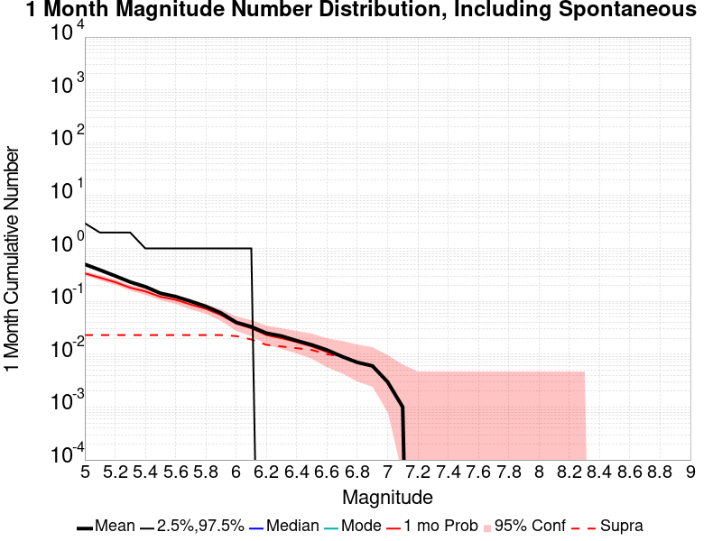
| Mag | Mean | 2.5 %ile | 97.5 %ile | Median | Mode | 1 mo Probability | 1 mo Prob 95% Conf | 1 mo Supra-Seis Prob |
|---|---|---|---|---|---|---|---|---|
| M≥5 | 0.502 | 0.000 | 3.000 | 0.000 | 0.000 | 0.338 (33.80%) | [30.89% 36.84%] | 0.023 (2.30%) |
| M≥5.1 | 0.392 | 0.000 | 2.000 | 0.000 | 0.000 | 0.280 (28.00%) | [25.26% 30.91%] | 0.023 (2.30%) |
| M≥5.2 | 0.303 | 0.000 | 2.000 | 0.000 | 0.000 | 0.231 (23.10%) | [20.55% 25.86%] | 0.023 (2.30%) |
| M≥5.3 | 0.232 | 0.000 | 2.000 | 0.000 | 0.000 | 0.181 (18.10%) | [15.79% 20.66%] | 0.023 (2.30%) |
| M≥5.4 | 0.189 | 0.000 | 1.000 | 0.000 | 0.000 | 0.154 (15.40%) | [13.25% 17.82%] | 0.023 (2.30%) |
| M≥5.5 | 0.142 | 0.000 | 1.000 | 0.000 | 0.000 | 0.122 (12.20%) | [10.27% 14.43%] | 0.023 (2.30%) |
| M≥5.6 | 0.123 | 0.000 | 1.000 | 0.000 | 0.000 | 0.107 (10.70%) | [8.89% 12.82%] | 0.023 (2.30%) |
| M≥5.7 | 0.100 | 0.000 | 1.000 | 0.000 | 0.000 | 0.087 (8.70%) | [7.06% 10.66%] | 0.023 (2.30%) |
| M≥5.8 | 0.080 | 0.000 | 1.000 | 0.000 | 0.000 | 0.072 (7.20%) | [5.71% 9.03%] | 0.023 (2.30%) |
| M≥5.9 | 0.060 | 0.000 | 1.000 | 0.000 | 0.000 | 0.055 (5.50%) | [4.21% 7.15%] | 0.023 (2.30%) |
| M≥6 | 0.040 | 0.000 | 1.000 | 0.000 | 0.000 | 0.038 (3.80%) | [2.74% 5.23%] | 0.022 (2.20%) |
| M≥6.1 | 0.033 | 0.000 | 1.000 | 0.000 | 0.000 | 0.031 (3.10%) | [2.15% 4.42%] | 0.019 (1.90%) |
| M≥6.2 | 0.025 | 0.000 | 0.000 | 0.000 | 0.000 | 0.023 (2.30%) | [1.50% 3.49%] | 0.015 (1.50%) |
| M≥6.3 | 0.022 | 0.000 | 0.000 | 0.000 | 0.000 | 0.020 (2.00%) | [1.26% 3.13%] | 0.014 (1.40%) |
| M≥6.4 | 0.018 | 0.000 | 0.000 | 0.000 | 0.000 | 0.017 (1.70%) | [1.03% 2.77%] | 0.013 (1.30%) |
| M≥6.5 | 0.015 | 0.000 | 0.000 | 0.000 | 0.000 | 0.014 (1.40%) | [0.80% 2.40%] | 0.012 (1.20%) |
| M≥6.6 | 0.012 | 0.000 | 0.000 | 0.000 | 0.000 | 0.011 (1.10%) | [0.58% 2.02%] | 0.010 (1.00%) |
| M≥6.7 | 9.00E-3 | 0.000 | 0.000 | 0.000 | 0.000 | 9.00E-3 (0.90%) | [0.44% 1.77%] | 9.00E-3 (0.90%) |
| M≥6.8 | 7.00E-3 | 0.000 | 0.000 | 0.000 | 0.000 | 7.00E-3 (0.70%) | [0.31% 1.50%] | 7.00E-3 (0.70%) |
| M≥6.9 | 6.00E-3 | 0.000 | 0.000 | 0.000 | 0.000 | 6.00E-3 (0.60%) | [0.24% 1.37%] | 6.00E-3 (0.60%) |
| M≥7 | 3.00E-3 | 0.000 | 0.000 | 0.000 | 0.000 | 3.00E-3 (0.30%) | [0.08% 0.95%] | 3.00E-3 (0.30%) |
| M≥7.1 | 1.00E-3 | 0.000 | 0.000 | 0.000 | 0.000 | 1.00E-3 (0.10%) | [0.01% 0.65%] | 1.00E-3 (0.10%) |
| M≥7.2 | 0.000 | 0.000 | 0.000 | 0.000 | 0.000 | 0.000 (0.00%) | [0.00% 0.48%] | 0.000 (0.00%) |
| M≥7.3 | 0.000 | 0.000 | 0.000 | 0.000 | 0.000 | 0.000 (0.00%) | [0.00% 0.48%] | 0.000 (0.00%) |
| M≥7.4 | 0.000 | 0.000 | 0.000 | 0.000 | 0.000 | 0.000 (0.00%) | [0.00% 0.48%] | 0.000 (0.00%) |
| M≥7.5 | 0.000 | 0.000 | 0.000 | 0.000 | 0.000 | 0.000 (0.00%) | [0.00% 0.48%] | 0.000 (0.00%) |
| M≥7.6 | 0.000 | 0.000 | 0.000 | 0.000 | 0.000 | 0.000 (0.00%) | [0.00% 0.48%] | 0.000 (0.00%) |
| M≥7.7 | 0.000 | 0.000 | 0.000 | 0.000 | 0.000 | 0.000 (0.00%) | [0.00% 0.48%] | 0.000 (0.00%) |
| M≥7.8 | 0.000 | 0.000 | 0.000 | 0.000 | 0.000 | 0.000 (0.00%) | [0.00% 0.48%] | 0.000 (0.00%) |
| M≥7.9 | 0.000 | 0.000 | 0.000 | 0.000 | 0.000 | 0.000 (0.00%) | [0.00% 0.48%] | 0.000 (0.00%) |
| M≥8 | 0.000 | 0.000 | 0.000 | 0.000 | 0.000 | 0.000 (0.00%) | [0.00% 0.48%] | 0.000 (0.00%) |
| M≥8.1 | 0.000 | 0.000 | 0.000 | 0.000 | 0.000 | 0.000 (0.00%) | [0.00% 0.48%] | 0.000 (0.00%) |
| M≥8.2 | 0.000 | 0.000 | 0.000 | 0.000 | 0.000 | 0.000 (0.00%) | [0.00% 0.48%] | 0.000 (0.00%) |
| M≥8.3 | 0.000 | 0.000 | 0.000 | 0.000 | 0.000 | 0.000 (0.00%) | [0.00% 0.48%] | 0.000 (0.00%) |
| M≥8.4 | 0.000 | 0.000 | 0.000 | 0.000 | 0.000 | 0.000 (0.00%) | [0.00% 0.48%] | 0.000 (0.00%) |
| M≥8.5 | 0.000 | 0.000 | 0.000 | 0.000 | 0.000 | 0.000 (0.00%) | [0.00% 0.48%] | 0.000 (0.00%) |
| M≥8.6 | 0.000 | 0.000 | 0.000 | 0.000 | 0.000 | 0.000 (0.00%) | [0.00% 0.48%] | 0.000 (0.00%) |
| M≥8.7 | 0.000 | 0.000 | 0.000 | 0.000 | 0.000 | 0.000 (0.00%) | [0.00% 0.48%] | 0.000 (0.00%) |
| M≥8.8 | 0.000 | 0.000 | 0.000 | 0.000 | 0.000 | 0.000 (0.00%) | [0.00% 0.48%] | 0.000 (0.00%) |
| M≥8.9 | 0.000 | 0.000 | 0.000 | 0.000 | 0.000 | 0.000 (0.00%) | [0.00% 0.48%] | 0.000 (0.00%) |
| M≥9 | 0.000 | 0.000 | 0.000 | 0.000 | 0.000 | 0.000 (0.00%) | [0.00% 0.48%] | 0.000 (0.00%) |
Note: This section only includes triggered events, spontaneous were calculated but filtered out here
Legend
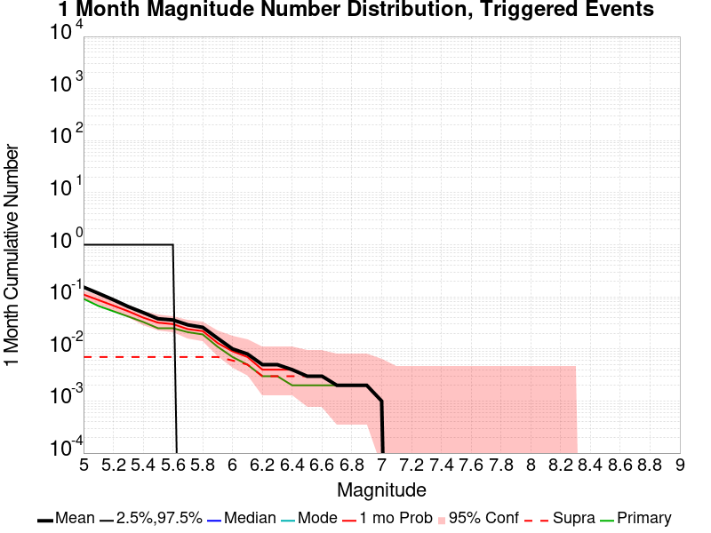
| Mag | Mean | 2.5 %ile | 97.5 %ile | Median | Mode | 1 mo Probability | 1 mo Prob 95% Conf | 1 mo Supra-Seis Prob | Primary Aftershocks Mean |
|---|---|---|---|---|---|---|---|---|---|
| M≥5 | 0.154 | 0.000 | 1.000 | 0.000 | 0.000 | 0.111 (11.10%) | [9.25% 13.25%] | 7.00E-3 (0.70%) | 0.092 |
| M≥5.1 | 0.117 | 0.000 | 1.000 | 0.000 | 0.000 | 0.087 (8.70%) | [7.06% 10.66%] | 7.00E-3 (0.70%) | 0.067 |
| M≥5.2 | 0.088 | 0.000 | 1.000 | 0.000 | 0.000 | 0.068 (6.80%) | [5.35% 8.59%] | 7.00E-3 (0.70%) | 0.053 |
| M≥5.3 | 0.065 | 0.000 | 1.000 | 0.000 | 0.000 | 0.053 (5.30%) | [4.03% 6.92%] | 7.00E-3 (0.70%) | 0.042 |
| M≥5.4 | 0.050 | 0.000 | 1.000 | 0.000 | 0.000 | 0.040 (4.00%) | [2.91% 5.46%] | 7.00E-3 (0.70%) | 0.033 |
| M≥5.5 | 0.038 | 0.000 | 1.000 | 0.000 | 0.000 | 0.032 (3.20%) | [2.23% 4.54%] | 7.00E-3 (0.70%) | 0.025 |
| M≥5.6 | 0.036 | 0.000 | 1.000 | 0.000 | 0.000 | 0.030 (3.00%) | [2.07% 4.31%] | 7.00E-3 (0.70%) | 0.025 |
| M≥5.7 | 0.029 | 0.000 | 0.000 | 0.000 | 0.000 | 0.024 (2.40%) | [1.58% 3.61%] | 7.00E-3 (0.70%) | 0.021 |
| M≥5.8 | 0.026 | 0.000 | 0.000 | 0.000 | 0.000 | 0.022 (2.20%) | [1.42% 3.37%] | 7.00E-3 (0.70%) | 0.019 |
| M≥5.9 | 0.016 | 0.000 | 0.000 | 0.000 | 0.000 | 0.013 (1.30%) | [0.72% 2.27%] | 7.00E-3 (0.70%) | 0.011 |
| M≥6 | 0.010 | 0.000 | 0.000 | 0.000 | 0.000 | 9.00E-3 (0.90%) | [0.44% 1.77%] | 6.00E-3 (0.60%) | 7.00E-3 |
| M≥6.1 | 8.00E-3 | 0.000 | 0.000 | 0.000 | 0.000 | 7.00E-3 (0.70%) | [0.31% 1.50%] | 5.00E-3 (0.50%) | 5.00E-3 |
| M≥6.2 | 5.00E-3 | 0.000 | 0.000 | 0.000 | 0.000 | 4.00E-3 (0.40%) | [0.13% 1.10%] | 3.00E-3 (0.30%) | 3.00E-3 |
| M≥6.3 | 5.00E-3 | 0.000 | 0.000 | 0.000 | 0.000 | 4.00E-3 (0.40%) | [0.13% 1.10%] | 3.00E-3 (0.30%) | 3.00E-3 |
| M≥6.4 | 4.00E-3 | 0.000 | 0.000 | 0.000 | 0.000 | 4.00E-3 (0.40%) | [0.13% 1.10%] | 3.00E-3 (0.30%) | 2.00E-3 |
| M≥6.5 | 3.00E-3 | 0.000 | 0.000 | 0.000 | 0.000 | 3.00E-3 (0.30%) | [0.08% 0.95%] | 3.00E-3 (0.30%) | 2.00E-3 |
| M≥6.6 | 3.00E-3 | 0.000 | 0.000 | 0.000 | 0.000 | 3.00E-3 (0.30%) | [0.08% 0.95%] | 3.00E-3 (0.30%) | 2.00E-3 |
| M≥6.7 | 2.00E-3 | 0.000 | 0.000 | 0.000 | 0.000 | 2.00E-3 (0.20%) | [0.03% 0.80%] | 2.00E-3 (0.20%) | 2.00E-3 |
| M≥6.8 | 2.00E-3 | 0.000 | 0.000 | 0.000 | 0.000 | 2.00E-3 (0.20%) | [0.03% 0.80%] | 2.00E-3 (0.20%) | 2.00E-3 |
| M≥6.9 | 2.00E-3 | 0.000 | 0.000 | 0.000 | 0.000 | 2.00E-3 (0.20%) | [0.03% 0.80%] | 2.00E-3 (0.20%) | 2.00E-3 |
| M≥7 | 1.00E-3 | 0.000 | 0.000 | 0.000 | 0.000 | 1.00E-3 (0.10%) | [0.01% 0.65%] | 1.00E-3 (0.10%) | 1.00E-3 |
| M≥7.1 | 0.000 | 0.000 | 0.000 | 0.000 | 0.000 | 0.000 (0.00%) | [0.00% 0.48%] | 0.000 (0.00%) | 0.000 |
| M≥7.2 | 0.000 | 0.000 | 0.000 | 0.000 | 0.000 | 0.000 (0.00%) | [0.00% 0.48%] | 0.000 (0.00%) | 0.000 |
| M≥7.3 | 0.000 | 0.000 | 0.000 | 0.000 | 0.000 | 0.000 (0.00%) | [0.00% 0.48%] | 0.000 (0.00%) | 0.000 |
| M≥7.4 | 0.000 | 0.000 | 0.000 | 0.000 | 0.000 | 0.000 (0.00%) | [0.00% 0.48%] | 0.000 (0.00%) | 0.000 |
| M≥7.5 | 0.000 | 0.000 | 0.000 | 0.000 | 0.000 | 0.000 (0.00%) | [0.00% 0.48%] | 0.000 (0.00%) | 0.000 |
| M≥7.6 | 0.000 | 0.000 | 0.000 | 0.000 | 0.000 | 0.000 (0.00%) | [0.00% 0.48%] | 0.000 (0.00%) | 0.000 |
| M≥7.7 | 0.000 | 0.000 | 0.000 | 0.000 | 0.000 | 0.000 (0.00%) | [0.00% 0.48%] | 0.000 (0.00%) | 0.000 |
| M≥7.8 | 0.000 | 0.000 | 0.000 | 0.000 | 0.000 | 0.000 (0.00%) | [0.00% 0.48%] | 0.000 (0.00%) | 0.000 |
| M≥7.9 | 0.000 | 0.000 | 0.000 | 0.000 | 0.000 | 0.000 (0.00%) | [0.00% 0.48%] | 0.000 (0.00%) | 0.000 |
| M≥8 | 0.000 | 0.000 | 0.000 | 0.000 | 0.000 | 0.000 (0.00%) | [0.00% 0.48%] | 0.000 (0.00%) | 0.000 |
| M≥8.1 | 0.000 | 0.000 | 0.000 | 0.000 | 0.000 | 0.000 (0.00%) | [0.00% 0.48%] | 0.000 (0.00%) | 0.000 |
| M≥8.2 | 0.000 | 0.000 | 0.000 | 0.000 | 0.000 | 0.000 (0.00%) | [0.00% 0.48%] | 0.000 (0.00%) | 0.000 |
| M≥8.3 | 0.000 | 0.000 | 0.000 | 0.000 | 0.000 | 0.000 (0.00%) | [0.00% 0.48%] | 0.000 (0.00%) | 0.000 |
| M≥8.4 | 0.000 | 0.000 | 0.000 | 0.000 | 0.000 | 0.000 (0.00%) | [0.00% 0.48%] | 0.000 (0.00%) | 0.000 |
| M≥8.5 | 0.000 | 0.000 | 0.000 | 0.000 | 0.000 | 0.000 (0.00%) | [0.00% 0.48%] | 0.000 (0.00%) | 0.000 |
| M≥8.6 | 0.000 | 0.000 | 0.000 | 0.000 | 0.000 | 0.000 (0.00%) | [0.00% 0.48%] | 0.000 (0.00%) | 0.000 |
| M≥8.7 | 0.000 | 0.000 | 0.000 | 0.000 | 0.000 | 0.000 (0.00%) | [0.00% 0.48%] | 0.000 (0.00%) | 0.000 |
| M≥8.8 | 0.000 | 0.000 | 0.000 | 0.000 | 0.000 | 0.000 (0.00%) | [0.00% 0.48%] | 0.000 (0.00%) | 0.000 |
| M≥8.9 | 0.000 | 0.000 | 0.000 | 0.000 | 0.000 | 0.000 (0.00%) | [0.00% 0.48%] | 0.000 (0.00%) | 0.000 |
| M≥9 | 0.000 | 0.000 | 0.000 | 0.000 | 0.000 | 0.000 (0.00%) | [0.00% 0.48%] | 0.000 (0.00%) | 0.000 |
Note: This section includes both spontaneous and triggered events
Legend
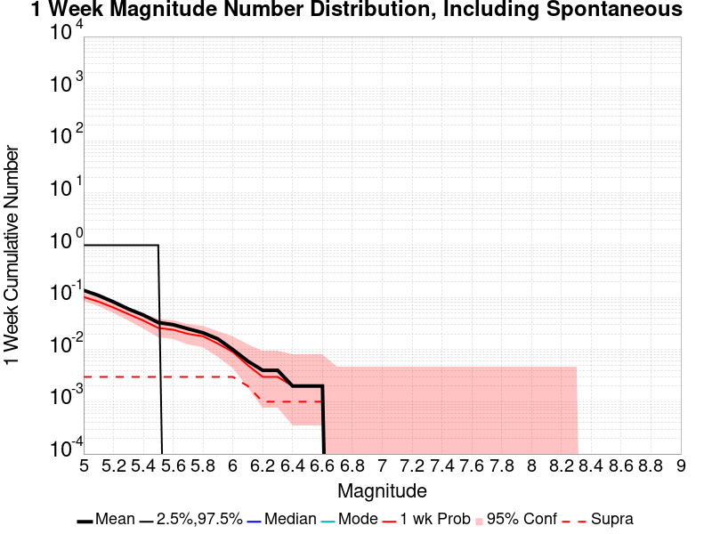
| Mag | Mean | 2.5 %ile | 97.5 %ile | Median | Mode | 1 wk Probability | 1 wk Prob 95% Conf | 1 wk Supra-Seis Prob |
|---|---|---|---|---|---|---|---|---|
| M≥5 | 0.137 | 0.000 | 1.000 | 0.000 | 0.000 | 0.102 (10.20%) | [8.43% 12.28%] | 3.00E-3 (0.30%) |
| M≥5.1 | 0.109 | 0.000 | 1.000 | 0.000 | 0.000 | 0.083 (8.30%) | [6.70% 10.23%] | 3.00E-3 (0.30%) |
| M≥5.2 | 0.082 | 0.000 | 1.000 | 0.000 | 0.000 | 0.064 (6.40%) | [5.00% 8.15%] | 3.00E-3 (0.30%) |
| M≥5.3 | 0.060 | 0.000 | 1.000 | 0.000 | 0.000 | 0.048 (4.80%) | [3.60% 6.36%] | 3.00E-3 (0.30%) |
| M≥5.4 | 0.046 | 0.000 | 1.000 | 0.000 | 0.000 | 0.036 (3.60%) | [2.57% 5.00%] | 3.00E-3 (0.30%) |
| M≥5.5 | 0.033 | 0.000 | 1.000 | 0.000 | 0.000 | 0.026 (2.60%) | [1.74% 3.84%] | 3.00E-3 (0.30%) |
| M≥5.6 | 0.030 | 0.000 | 0.000 | 0.000 | 0.000 | 0.024 (2.40%) | [1.58% 3.61%] | 3.00E-3 (0.30%) |
| M≥5.7 | 0.025 | 0.000 | 0.000 | 0.000 | 0.000 | 0.020 (2.00%) | [1.26% 3.13%] | 3.00E-3 (0.30%) |
| M≥5.8 | 0.021 | 0.000 | 0.000 | 0.000 | 0.000 | 0.018 (1.80%) | [1.10% 2.89%] | 3.00E-3 (0.30%) |
| M≥5.9 | 0.016 | 0.000 | 0.000 | 0.000 | 0.000 | 0.013 (1.30%) | [0.72% 2.27%] | 3.00E-3 (0.30%) |
| M≥6 | 0.010 | 0.000 | 0.000 | 0.000 | 0.000 | 9.00E-3 (0.90%) | [0.44% 1.77%] | 3.00E-3 (0.30%) |
| M≥6.1 | 6.00E-3 | 0.000 | 0.000 | 0.000 | 0.000 | 5.00E-3 (0.50%) | [0.18% 1.23%] | 2.00E-3 (0.20%) |
| M≥6.2 | 4.00E-3 | 0.000 | 0.000 | 0.000 | 0.000 | 3.00E-3 (0.30%) | [0.08% 0.95%] | 1.00E-3 (0.10%) |
| M≥6.3 | 4.00E-3 | 0.000 | 0.000 | 0.000 | 0.000 | 3.00E-3 (0.30%) | [0.08% 0.95%] | 1.00E-3 (0.10%) |
| M≥6.4 | 2.00E-3 | 0.000 | 0.000 | 0.000 | 0.000 | 2.00E-3 (0.20%) | [0.03% 0.80%] | 1.00E-3 (0.10%) |
| M≥6.5 | 2.00E-3 | 0.000 | 0.000 | 0.000 | 0.000 | 2.00E-3 (0.20%) | [0.03% 0.80%] | 1.00E-3 (0.10%) |
| M≥6.6 | 2.00E-3 | 0.000 | 0.000 | 0.000 | 0.000 | 2.00E-3 (0.20%) | [0.03% 0.80%] | 1.00E-3 (0.10%) |
| M≥6.7 | 0.000 | 0.000 | 0.000 | 0.000 | 0.000 | 0.000 (0.00%) | [0.00% 0.48%] | 0.000 (0.00%) |
| M≥6.8 | 0.000 | 0.000 | 0.000 | 0.000 | 0.000 | 0.000 (0.00%) | [0.00% 0.48%] | 0.000 (0.00%) |
| M≥6.9 | 0.000 | 0.000 | 0.000 | 0.000 | 0.000 | 0.000 (0.00%) | [0.00% 0.48%] | 0.000 (0.00%) |
| M≥7 | 0.000 | 0.000 | 0.000 | 0.000 | 0.000 | 0.000 (0.00%) | [0.00% 0.48%] | 0.000 (0.00%) |
| M≥7.1 | 0.000 | 0.000 | 0.000 | 0.000 | 0.000 | 0.000 (0.00%) | [0.00% 0.48%] | 0.000 (0.00%) |
| M≥7.2 | 0.000 | 0.000 | 0.000 | 0.000 | 0.000 | 0.000 (0.00%) | [0.00% 0.48%] | 0.000 (0.00%) |
| M≥7.3 | 0.000 | 0.000 | 0.000 | 0.000 | 0.000 | 0.000 (0.00%) | [0.00% 0.48%] | 0.000 (0.00%) |
| M≥7.4 | 0.000 | 0.000 | 0.000 | 0.000 | 0.000 | 0.000 (0.00%) | [0.00% 0.48%] | 0.000 (0.00%) |
| M≥7.5 | 0.000 | 0.000 | 0.000 | 0.000 | 0.000 | 0.000 (0.00%) | [0.00% 0.48%] | 0.000 (0.00%) |
| M≥7.6 | 0.000 | 0.000 | 0.000 | 0.000 | 0.000 | 0.000 (0.00%) | [0.00% 0.48%] | 0.000 (0.00%) |
| M≥7.7 | 0.000 | 0.000 | 0.000 | 0.000 | 0.000 | 0.000 (0.00%) | [0.00% 0.48%] | 0.000 (0.00%) |
| M≥7.8 | 0.000 | 0.000 | 0.000 | 0.000 | 0.000 | 0.000 (0.00%) | [0.00% 0.48%] | 0.000 (0.00%) |
| M≥7.9 | 0.000 | 0.000 | 0.000 | 0.000 | 0.000 | 0.000 (0.00%) | [0.00% 0.48%] | 0.000 (0.00%) |
| M≥8 | 0.000 | 0.000 | 0.000 | 0.000 | 0.000 | 0.000 (0.00%) | [0.00% 0.48%] | 0.000 (0.00%) |
| M≥8.1 | 0.000 | 0.000 | 0.000 | 0.000 | 0.000 | 0.000 (0.00%) | [0.00% 0.48%] | 0.000 (0.00%) |
| M≥8.2 | 0.000 | 0.000 | 0.000 | 0.000 | 0.000 | 0.000 (0.00%) | [0.00% 0.48%] | 0.000 (0.00%) |
| M≥8.3 | 0.000 | 0.000 | 0.000 | 0.000 | 0.000 | 0.000 (0.00%) | [0.00% 0.48%] | 0.000 (0.00%) |
| M≥8.4 | 0.000 | 0.000 | 0.000 | 0.000 | 0.000 | 0.000 (0.00%) | [0.00% 0.48%] | 0.000 (0.00%) |
| M≥8.5 | 0.000 | 0.000 | 0.000 | 0.000 | 0.000 | 0.000 (0.00%) | [0.00% 0.48%] | 0.000 (0.00%) |
| M≥8.6 | 0.000 | 0.000 | 0.000 | 0.000 | 0.000 | 0.000 (0.00%) | [0.00% 0.48%] | 0.000 (0.00%) |
| M≥8.7 | 0.000 | 0.000 | 0.000 | 0.000 | 0.000 | 0.000 (0.00%) | [0.00% 0.48%] | 0.000 (0.00%) |
| M≥8.8 | 0.000 | 0.000 | 0.000 | 0.000 | 0.000 | 0.000 (0.00%) | [0.00% 0.48%] | 0.000 (0.00%) |
| M≥8.9 | 0.000 | 0.000 | 0.000 | 0.000 | 0.000 | 0.000 (0.00%) | [0.00% 0.48%] | 0.000 (0.00%) |
| M≥9 | 0.000 | 0.000 | 0.000 | 0.000 | 0.000 | 0.000 (0.00%) | [0.00% 0.48%] | 0.000 (0.00%) |
Note: This section only includes triggered events, spontaneous were calculated but filtered out here
Legend
| Mag | Mean | 2.5 %ile | 97.5 %ile | Median | Mode | 1 wk Probability | 1 wk Prob 95% Conf | 1 wk Supra-Seis Prob | Primary Aftershocks Mean |
|---|---|---|---|---|---|---|---|---|---|
| M≥5 | 0.060 | 0.000 | 1.000 | 0.000 | 0.000 | 0.036 (3.60%) | [2.57% 5.00%] | 1.00E-3 (0.10%) | 0.029 |
| M≥5.1 | 0.045 | 0.000 | 1.000 | 0.000 | 0.000 | 0.028 (2.80%) | [1.90% 4.08%] | 1.00E-3 (0.10%) | 0.021 |
| M≥5.2 | 0.033 | 0.000 | 0.000 | 0.000 | 0.000 | 0.021 (2.10%) | [1.34% 3.25%] | 1.00E-3 (0.10%) | 0.017 |
| M≥5.3 | 0.023 | 0.000 | 0.000 | 0.000 | 0.000 | 0.016 (1.60%) | [0.95% 2.64%] | 1.00E-3 (0.10%) | 0.015 |
| M≥5.4 | 0.019 | 0.000 | 0.000 | 0.000 | 0.000 | 0.012 (1.20%) | [0.65% 2.15%] | 1.00E-3 (0.10%) | 0.011 |
| M≥5.5 | 0.014 | 0.000 | 0.000 | 0.000 | 0.000 | 0.010 (1.00%) | [0.51% 1.90%] | 1.00E-3 (0.10%) | 9.00E-3 |
| M≥5.6 | 0.013 | 0.000 | 0.000 | 0.000 | 0.000 | 9.00E-3 (0.90%) | [0.44% 1.77%] | 1.00E-3 (0.10%) | 9.00E-3 |
| M≥5.7 | 0.010 | 0.000 | 0.000 | 0.000 | 0.000 | 7.00E-3 (0.70%) | [0.31% 1.50%] | 1.00E-3 (0.10%) | 7.00E-3 |
| M≥5.8 | 0.010 | 0.000 | 0.000 | 0.000 | 0.000 | 7.00E-3 (0.70%) | [0.31% 1.50%] | 1.00E-3 (0.10%) | 7.00E-3 |
| M≥5.9 | 8.00E-3 | 0.000 | 0.000 | 0.000 | 0.000 | 5.00E-3 (0.50%) | [0.18% 1.23%] | 1.00E-3 (0.10%) | 5.00E-3 |
| M≥6 | 4.00E-3 | 0.000 | 0.000 | 0.000 | 0.000 | 3.00E-3 (0.30%) | [0.08% 0.95%] | 1.00E-3 (0.10%) | 3.00E-3 |
| M≥6.1 | 3.00E-3 | 0.000 | 0.000 | 0.000 | 0.000 | 2.00E-3 (0.20%) | [0.03% 0.80%] | 1.00E-3 (0.10%) | 2.00E-3 |
| M≥6.2 | 2.00E-3 | 0.000 | 0.000 | 0.000 | 0.000 | 1.00E-3 (0.10%) | [0.01% 0.65%] | 1.00E-3 (0.10%) | 1.00E-3 |
| M≥6.3 | 2.00E-3 | 0.000 | 0.000 | 0.000 | 0.000 | 1.00E-3 (0.10%) | [0.01% 0.65%] | 1.00E-3 (0.10%) | 1.00E-3 |
| M≥6.4 | 1.00E-3 | 0.000 | 0.000 | 0.000 | 0.000 | 1.00E-3 (0.10%) | [0.01% 0.65%] | 1.00E-3 (0.10%) | 0.000 |
| M≥6.5 | 1.00E-3 | 0.000 | 0.000 | 0.000 | 0.000 | 1.00E-3 (0.10%) | [0.01% 0.65%] | 1.00E-3 (0.10%) | 0.000 |
| M≥6.6 | 1.00E-3 | 0.000 | 0.000 | 0.000 | 0.000 | 1.00E-3 (0.10%) | [0.01% 0.65%] | 1.00E-3 (0.10%) | 0.000 |
| M≥6.7 | 0.000 | 0.000 | 0.000 | 0.000 | 0.000 | 0.000 (0.00%) | [0.00% 0.48%] | 0.000 (0.00%) | 0.000 |
| M≥6.8 | 0.000 | 0.000 | 0.000 | 0.000 | 0.000 | 0.000 (0.00%) | [0.00% 0.48%] | 0.000 (0.00%) | 0.000 |
| M≥6.9 | 0.000 | 0.000 | 0.000 | 0.000 | 0.000 | 0.000 (0.00%) | [0.00% 0.48%] | 0.000 (0.00%) | 0.000 |
| M≥7 | 0.000 | 0.000 | 0.000 | 0.000 | 0.000 | 0.000 (0.00%) | [0.00% 0.48%] | 0.000 (0.00%) | 0.000 |
| M≥7.1 | 0.000 | 0.000 | 0.000 | 0.000 | 0.000 | 0.000 (0.00%) | [0.00% 0.48%] | 0.000 (0.00%) | 0.000 |
| M≥7.2 | 0.000 | 0.000 | 0.000 | 0.000 | 0.000 | 0.000 (0.00%) | [0.00% 0.48%] | 0.000 (0.00%) | 0.000 |
| M≥7.3 | 0.000 | 0.000 | 0.000 | 0.000 | 0.000 | 0.000 (0.00%) | [0.00% 0.48%] | 0.000 (0.00%) | 0.000 |
| M≥7.4 | 0.000 | 0.000 | 0.000 | 0.000 | 0.000 | 0.000 (0.00%) | [0.00% 0.48%] | 0.000 (0.00%) | 0.000 |
| M≥7.5 | 0.000 | 0.000 | 0.000 | 0.000 | 0.000 | 0.000 (0.00%) | [0.00% 0.48%] | 0.000 (0.00%) | 0.000 |
| M≥7.6 | 0.000 | 0.000 | 0.000 | 0.000 | 0.000 | 0.000 (0.00%) | [0.00% 0.48%] | 0.000 (0.00%) | 0.000 |
| M≥7.7 | 0.000 | 0.000 | 0.000 | 0.000 | 0.000 | 0.000 (0.00%) | [0.00% 0.48%] | 0.000 (0.00%) | 0.000 |
| M≥7.8 | 0.000 | 0.000 | 0.000 | 0.000 | 0.000 | 0.000 (0.00%) | [0.00% 0.48%] | 0.000 (0.00%) | 0.000 |
| M≥7.9 | 0.000 | 0.000 | 0.000 | 0.000 | 0.000 | 0.000 (0.00%) | [0.00% 0.48%] | 0.000 (0.00%) | 0.000 |
| M≥8 | 0.000 | 0.000 | 0.000 | 0.000 | 0.000 | 0.000 (0.00%) | [0.00% 0.48%] | 0.000 (0.00%) | 0.000 |
| M≥8.1 | 0.000 | 0.000 | 0.000 | 0.000 | 0.000 | 0.000 (0.00%) | [0.00% 0.48%] | 0.000 (0.00%) | 0.000 |
| M≥8.2 | 0.000 | 0.000 | 0.000 | 0.000 | 0.000 | 0.000 (0.00%) | [0.00% 0.48%] | 0.000 (0.00%) | 0.000 |
| M≥8.3 | 0.000 | 0.000 | 0.000 | 0.000 | 0.000 | 0.000 (0.00%) | [0.00% 0.48%] | 0.000 (0.00%) | 0.000 |
| M≥8.4 | 0.000 | 0.000 | 0.000 | 0.000 | 0.000 | 0.000 (0.00%) | [0.00% 0.48%] | 0.000 (0.00%) | 0.000 |
| M≥8.5 | 0.000 | 0.000 | 0.000 | 0.000 | 0.000 | 0.000 (0.00%) | [0.00% 0.48%] | 0.000 (0.00%) | 0.000 |
| M≥8.6 | 0.000 | 0.000 | 0.000 | 0.000 | 0.000 | 0.000 (0.00%) | [0.00% 0.48%] | 0.000 (0.00%) | 0.000 |
| M≥8.7 | 0.000 | 0.000 | 0.000 | 0.000 | 0.000 | 0.000 (0.00%) | [0.00% 0.48%] | 0.000 (0.00%) | 0.000 |
| M≥8.8 | 0.000 | 0.000 | 0.000 | 0.000 | 0.000 | 0.000 (0.00%) | [0.00% 0.48%] | 0.000 (0.00%) | 0.000 |
| M≥8.9 | 0.000 | 0.000 | 0.000 | 0.000 | 0.000 | 0.000 (0.00%) | [0.00% 0.48%] | 0.000 (0.00%) | 0.000 |
| M≥9 | 0.000 | 0.000 | 0.000 | 0.000 | 0.000 | 0.000 (0.00%) | [0.00% 0.48%] | 0.000 (0.00%) | 0.000 |
Note: This section includes both spontaneous and triggered events
Legend
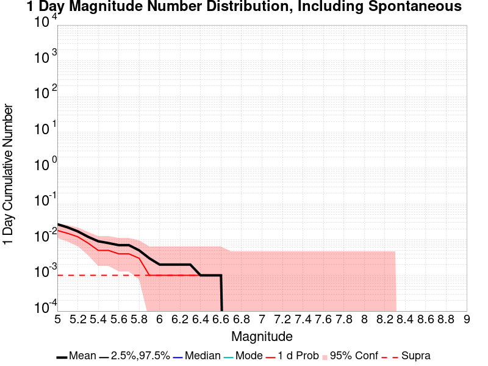
| Mag | Mean | 2.5 %ile | 97.5 %ile | Median | Mode | 1 d Probability | 1 d Prob 95% Conf | 1 d Supra-Seis Prob |
|---|---|---|---|---|---|---|---|---|
| M≥5 | 0.027 | 0.000 | 0.000 | 0.000 | 0.000 | 0.018 (1.80%) | [1.10% 2.89%] | 1.00E-3 (0.10%) |
| M≥5.1 | 0.022 | 0.000 | 0.000 | 0.000 | 0.000 | 0.015 (1.50%) | [0.87% 2.52%] | 1.00E-3 (0.10%) |
| M≥5.2 | 0.017 | 0.000 | 0.000 | 0.000 | 0.000 | 0.012 (1.20%) | [0.65% 2.15%] | 1.00E-3 (0.10%) |
| M≥5.3 | 0.012 | 0.000 | 0.000 | 0.000 | 0.000 | 8.00E-3 (0.80%) | [0.37% 1.64%] | 1.00E-3 (0.10%) |
| M≥5.4 | 9.00E-3 | 0.000 | 0.000 | 0.000 | 0.000 | 5.00E-3 (0.50%) | [0.18% 1.23%] | 1.00E-3 (0.10%) |
| M≥5.5 | 8.00E-3 | 0.000 | 0.000 | 0.000 | 0.000 | 5.00E-3 (0.50%) | [0.18% 1.23%] | 1.00E-3 (0.10%) |
| M≥5.6 | 7.00E-3 | 0.000 | 0.000 | 0.000 | 0.000 | 4.00E-3 (0.40%) | [0.13% 1.10%] | 1.00E-3 (0.10%) |
| M≥5.7 | 7.00E-3 | 0.000 | 0.000 | 0.000 | 0.000 | 4.00E-3 (0.40%) | [0.13% 1.10%] | 1.00E-3 (0.10%) |
| M≥5.8 | 5.00E-3 | 0.000 | 0.000 | 0.000 | 0.000 | 3.00E-3 (0.30%) | [0.08% 0.95%] | 1.00E-3 (0.10%) |
| M≥5.9 | 3.00E-3 | 0.000 | 0.000 | 0.000 | 0.000 | 1.00E-3 (0.10%) | [0.01% 0.65%] | 1.00E-3 (0.10%) |
| M≥6 | 2.00E-3 | 0.000 | 0.000 | 0.000 | 0.000 | 1.00E-3 (0.10%) | [0.01% 0.65%] | 1.00E-3 (0.10%) |
| M≥6.1 | 2.00E-3 | 0.000 | 0.000 | 0.000 | 0.000 | 1.00E-3 (0.10%) | [0.01% 0.65%] | 1.00E-3 (0.10%) |
| M≥6.2 | 2.00E-3 | 0.000 | 0.000 | 0.000 | 0.000 | 1.00E-3 (0.10%) | [0.01% 0.65%] | 1.00E-3 (0.10%) |
| M≥6.3 | 2.00E-3 | 0.000 | 0.000 | 0.000 | 0.000 | 1.00E-3 (0.10%) | [0.01% 0.65%] | 1.00E-3 (0.10%) |
| M≥6.4 | 1.00E-3 | 0.000 | 0.000 | 0.000 | 0.000 | 1.00E-3 (0.10%) | [0.01% 0.65%] | 1.00E-3 (0.10%) |
| M≥6.5 | 1.00E-3 | 0.000 | 0.000 | 0.000 | 0.000 | 1.00E-3 (0.10%) | [0.01% 0.65%] | 1.00E-3 (0.10%) |
| M≥6.6 | 1.00E-3 | 0.000 | 0.000 | 0.000 | 0.000 | 1.00E-3 (0.10%) | [0.01% 0.65%] | 1.00E-3 (0.10%) |
| M≥6.7 | 0.000 | 0.000 | 0.000 | 0.000 | 0.000 | 0.000 (0.00%) | [0.00% 0.48%] | 0.000 (0.00%) |
| M≥6.8 | 0.000 | 0.000 | 0.000 | 0.000 | 0.000 | 0.000 (0.00%) | [0.00% 0.48%] | 0.000 (0.00%) |
| M≥6.9 | 0.000 | 0.000 | 0.000 | 0.000 | 0.000 | 0.000 (0.00%) | [0.00% 0.48%] | 0.000 (0.00%) |
| M≥7 | 0.000 | 0.000 | 0.000 | 0.000 | 0.000 | 0.000 (0.00%) | [0.00% 0.48%] | 0.000 (0.00%) |
| M≥7.1 | 0.000 | 0.000 | 0.000 | 0.000 | 0.000 | 0.000 (0.00%) | [0.00% 0.48%] | 0.000 (0.00%) |
| M≥7.2 | 0.000 | 0.000 | 0.000 | 0.000 | 0.000 | 0.000 (0.00%) | [0.00% 0.48%] | 0.000 (0.00%) |
| M≥7.3 | 0.000 | 0.000 | 0.000 | 0.000 | 0.000 | 0.000 (0.00%) | [0.00% 0.48%] | 0.000 (0.00%) |
| M≥7.4 | 0.000 | 0.000 | 0.000 | 0.000 | 0.000 | 0.000 (0.00%) | [0.00% 0.48%] | 0.000 (0.00%) |
| M≥7.5 | 0.000 | 0.000 | 0.000 | 0.000 | 0.000 | 0.000 (0.00%) | [0.00% 0.48%] | 0.000 (0.00%) |
| M≥7.6 | 0.000 | 0.000 | 0.000 | 0.000 | 0.000 | 0.000 (0.00%) | [0.00% 0.48%] | 0.000 (0.00%) |
| M≥7.7 | 0.000 | 0.000 | 0.000 | 0.000 | 0.000 | 0.000 (0.00%) | [0.00% 0.48%] | 0.000 (0.00%) |
| M≥7.8 | 0.000 | 0.000 | 0.000 | 0.000 | 0.000 | 0.000 (0.00%) | [0.00% 0.48%] | 0.000 (0.00%) |
| M≥7.9 | 0.000 | 0.000 | 0.000 | 0.000 | 0.000 | 0.000 (0.00%) | [0.00% 0.48%] | 0.000 (0.00%) |
| M≥8 | 0.000 | 0.000 | 0.000 | 0.000 | 0.000 | 0.000 (0.00%) | [0.00% 0.48%] | 0.000 (0.00%) |
| M≥8.1 | 0.000 | 0.000 | 0.000 | 0.000 | 0.000 | 0.000 (0.00%) | [0.00% 0.48%] | 0.000 (0.00%) |
| M≥8.2 | 0.000 | 0.000 | 0.000 | 0.000 | 0.000 | 0.000 (0.00%) | [0.00% 0.48%] | 0.000 (0.00%) |
| M≥8.3 | 0.000 | 0.000 | 0.000 | 0.000 | 0.000 | 0.000 (0.00%) | [0.00% 0.48%] | 0.000 (0.00%) |
| M≥8.4 | 0.000 | 0.000 | 0.000 | 0.000 | 0.000 | 0.000 (0.00%) | [0.00% 0.48%] | 0.000 (0.00%) |
| M≥8.5 | 0.000 | 0.000 | 0.000 | 0.000 | 0.000 | 0.000 (0.00%) | [0.00% 0.48%] | 0.000 (0.00%) |
| M≥8.6 | 0.000 | 0.000 | 0.000 | 0.000 | 0.000 | 0.000 (0.00%) | [0.00% 0.48%] | 0.000 (0.00%) |
| M≥8.7 | 0.000 | 0.000 | 0.000 | 0.000 | 0.000 | 0.000 (0.00%) | [0.00% 0.48%] | 0.000 (0.00%) |
| M≥8.8 | 0.000 | 0.000 | 0.000 | 0.000 | 0.000 | 0.000 (0.00%) | [0.00% 0.48%] | 0.000 (0.00%) |
| M≥8.9 | 0.000 | 0.000 | 0.000 | 0.000 | 0.000 | 0.000 (0.00%) | [0.00% 0.48%] | 0.000 (0.00%) |
| M≥9 | 0.000 | 0.000 | 0.000 | 0.000 | 0.000 | 0.000 (0.00%) | [0.00% 0.48%] | 0.000 (0.00%) |
Note: This section only includes triggered events, spontaneous were calculated but filtered out here
Legend
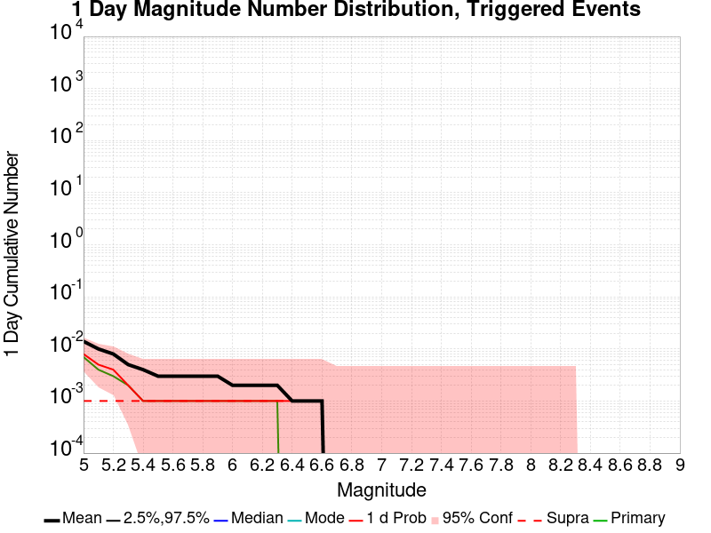
| Mag | Mean | 2.5 %ile | 97.5 %ile | Median | Mode | 1 d Probability | 1 d Prob 95% Conf | 1 d Supra-Seis Prob | Primary Aftershocks Mean |
|---|---|---|---|---|---|---|---|---|---|
| M≥5 | 0.014 | 0.000 | 0.000 | 0.000 | 0.000 | 8.00E-3 (0.80%) | [0.37% 1.64%] | 1.00E-3 (0.10%) | 7.00E-3 |
| M≥5.1 | 0.010 | 0.000 | 0.000 | 0.000 | 0.000 | 5.00E-3 (0.50%) | [0.18% 1.23%] | 1.00E-3 (0.10%) | 4.00E-3 |
| M≥5.2 | 8.00E-3 | 0.000 | 0.000 | 0.000 | 0.000 | 4.00E-3 (0.40%) | [0.13% 1.10%] | 1.00E-3 (0.10%) | 3.00E-3 |
| M≥5.3 | 5.00E-3 | 0.000 | 0.000 | 0.000 | 0.000 | 2.00E-3 (0.20%) | [0.03% 0.80%] | 1.00E-3 (0.10%) | 2.00E-3 |
| M≥5.4 | 4.00E-3 | 0.000 | 0.000 | 0.000 | 0.000 | 1.00E-3 (0.10%) | [0.01% 0.65%] | 1.00E-3 (0.10%) | 1.00E-3 |
| M≥5.5 | 3.00E-3 | 0.000 | 0.000 | 0.000 | 0.000 | 1.00E-3 (0.10%) | [0.01% 0.65%] | 1.00E-3 (0.10%) | 1.00E-3 |
| M≥5.6 | 3.00E-3 | 0.000 | 0.000 | 0.000 | 0.000 | 1.00E-3 (0.10%) | [0.01% 0.65%] | 1.00E-3 (0.10%) | 1.00E-3 |
| M≥5.7 | 3.00E-3 | 0.000 | 0.000 | 0.000 | 0.000 | 1.00E-3 (0.10%) | [0.01% 0.65%] | 1.00E-3 (0.10%) | 1.00E-3 |
| M≥5.8 | 3.00E-3 | 0.000 | 0.000 | 0.000 | 0.000 | 1.00E-3 (0.10%) | [0.01% 0.65%] | 1.00E-3 (0.10%) | 1.00E-3 |
| M≥5.9 | 3.00E-3 | 0.000 | 0.000 | 0.000 | 0.000 | 1.00E-3 (0.10%) | [0.01% 0.65%] | 1.00E-3 (0.10%) | 1.00E-3 |
| M≥6 | 2.00E-3 | 0.000 | 0.000 | 0.000 | 0.000 | 1.00E-3 (0.10%) | [0.01% 0.65%] | 1.00E-3 (0.10%) | 1.00E-3 |
| M≥6.1 | 2.00E-3 | 0.000 | 0.000 | 0.000 | 0.000 | 1.00E-3 (0.10%) | [0.01% 0.65%] | 1.00E-3 (0.10%) | 1.00E-3 |
| M≥6.2 | 2.00E-3 | 0.000 | 0.000 | 0.000 | 0.000 | 1.00E-3 (0.10%) | [0.01% 0.65%] | 1.00E-3 (0.10%) | 1.00E-3 |
| M≥6.3 | 2.00E-3 | 0.000 | 0.000 | 0.000 | 0.000 | 1.00E-3 (0.10%) | [0.01% 0.65%] | 1.00E-3 (0.10%) | 1.00E-3 |
| M≥6.4 | 1.00E-3 | 0.000 | 0.000 | 0.000 | 0.000 | 1.00E-3 (0.10%) | [0.01% 0.65%] | 1.00E-3 (0.10%) | 0.000 |
| M≥6.5 | 1.00E-3 | 0.000 | 0.000 | 0.000 | 0.000 | 1.00E-3 (0.10%) | [0.01% 0.65%] | 1.00E-3 (0.10%) | 0.000 |
| M≥6.6 | 1.00E-3 | 0.000 | 0.000 | 0.000 | 0.000 | 1.00E-3 (0.10%) | [0.01% 0.65%] | 1.00E-3 (0.10%) | 0.000 |
| M≥6.7 | 0.000 | 0.000 | 0.000 | 0.000 | 0.000 | 0.000 (0.00%) | [0.00% 0.48%] | 0.000 (0.00%) | 0.000 |
| M≥6.8 | 0.000 | 0.000 | 0.000 | 0.000 | 0.000 | 0.000 (0.00%) | [0.00% 0.48%] | 0.000 (0.00%) | 0.000 |
| M≥6.9 | 0.000 | 0.000 | 0.000 | 0.000 | 0.000 | 0.000 (0.00%) | [0.00% 0.48%] | 0.000 (0.00%) | 0.000 |
| M≥7 | 0.000 | 0.000 | 0.000 | 0.000 | 0.000 | 0.000 (0.00%) | [0.00% 0.48%] | 0.000 (0.00%) | 0.000 |
| M≥7.1 | 0.000 | 0.000 | 0.000 | 0.000 | 0.000 | 0.000 (0.00%) | [0.00% 0.48%] | 0.000 (0.00%) | 0.000 |
| M≥7.2 | 0.000 | 0.000 | 0.000 | 0.000 | 0.000 | 0.000 (0.00%) | [0.00% 0.48%] | 0.000 (0.00%) | 0.000 |
| M≥7.3 | 0.000 | 0.000 | 0.000 | 0.000 | 0.000 | 0.000 (0.00%) | [0.00% 0.48%] | 0.000 (0.00%) | 0.000 |
| M≥7.4 | 0.000 | 0.000 | 0.000 | 0.000 | 0.000 | 0.000 (0.00%) | [0.00% 0.48%] | 0.000 (0.00%) | 0.000 |
| M≥7.5 | 0.000 | 0.000 | 0.000 | 0.000 | 0.000 | 0.000 (0.00%) | [0.00% 0.48%] | 0.000 (0.00%) | 0.000 |
| M≥7.6 | 0.000 | 0.000 | 0.000 | 0.000 | 0.000 | 0.000 (0.00%) | [0.00% 0.48%] | 0.000 (0.00%) | 0.000 |
| M≥7.7 | 0.000 | 0.000 | 0.000 | 0.000 | 0.000 | 0.000 (0.00%) | [0.00% 0.48%] | 0.000 (0.00%) | 0.000 |
| M≥7.8 | 0.000 | 0.000 | 0.000 | 0.000 | 0.000 | 0.000 (0.00%) | [0.00% 0.48%] | 0.000 (0.00%) | 0.000 |
| M≥7.9 | 0.000 | 0.000 | 0.000 | 0.000 | 0.000 | 0.000 (0.00%) | [0.00% 0.48%] | 0.000 (0.00%) | 0.000 |
| M≥8 | 0.000 | 0.000 | 0.000 | 0.000 | 0.000 | 0.000 (0.00%) | [0.00% 0.48%] | 0.000 (0.00%) | 0.000 |
| M≥8.1 | 0.000 | 0.000 | 0.000 | 0.000 | 0.000 | 0.000 (0.00%) | [0.00% 0.48%] | 0.000 (0.00%) | 0.000 |
| M≥8.2 | 0.000 | 0.000 | 0.000 | 0.000 | 0.000 | 0.000 (0.00%) | [0.00% 0.48%] | 0.000 (0.00%) | 0.000 |
| M≥8.3 | 0.000 | 0.000 | 0.000 | 0.000 | 0.000 | 0.000 (0.00%) | [0.00% 0.48%] | 0.000 (0.00%) | 0.000 |
| M≥8.4 | 0.000 | 0.000 | 0.000 | 0.000 | 0.000 | 0.000 (0.00%) | [0.00% 0.48%] | 0.000 (0.00%) | 0.000 |
| M≥8.5 | 0.000 | 0.000 | 0.000 | 0.000 | 0.000 | 0.000 (0.00%) | [0.00% 0.48%] | 0.000 (0.00%) | 0.000 |
| M≥8.6 | 0.000 | 0.000 | 0.000 | 0.000 | 0.000 | 0.000 (0.00%) | [0.00% 0.48%] | 0.000 (0.00%) | 0.000 |
| M≥8.7 | 0.000 | 0.000 | 0.000 | 0.000 | 0.000 | 0.000 (0.00%) | [0.00% 0.48%] | 0.000 (0.00%) | 0.000 |
| M≥8.8 | 0.000 | 0.000 | 0.000 | 0.000 | 0.000 | 0.000 (0.00%) | [0.00% 0.48%] | 0.000 (0.00%) | 0.000 |
| M≥8.9 | 0.000 | 0.000 | 0.000 | 0.000 | 0.000 | 0.000 (0.00%) | [0.00% 0.48%] | 0.000 (0.00%) | 0.000 |
| M≥9 | 0.000 | 0.000 | 0.000 | 0.000 | 0.000 | 0.000 (0.00%) | [0.00% 0.48%] | 0.000 (0.00%) | 0.000 |
Note: This section includes both spontaneous and triggered events
Legend
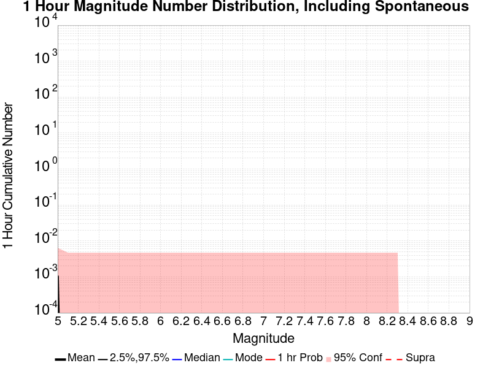
| Mag | Mean | 2.5 %ile | 97.5 %ile | Median | Mode | 1 hr Probability | 1 hr Prob 95% Conf | 1 hr Supra-Seis Prob |
|---|---|---|---|---|---|---|---|---|
| M≥5 | 1.00E-3 | 0.000 | 0.000 | 0.000 | 0.000 | 1.00E-3 (0.10%) | [0.01% 0.65%] | 0.000 (0.00%) |
| M≥5.1 | 0.000 | 0.000 | 0.000 | 0.000 | 0.000 | 0.000 (0.00%) | [0.00% 0.48%] | 0.000 (0.00%) |
| M≥5.2 | 0.000 | 0.000 | 0.000 | 0.000 | 0.000 | 0.000 (0.00%) | [0.00% 0.48%] | 0.000 (0.00%) |
| M≥5.3 | 0.000 | 0.000 | 0.000 | 0.000 | 0.000 | 0.000 (0.00%) | [0.00% 0.48%] | 0.000 (0.00%) |
| M≥5.4 | 0.000 | 0.000 | 0.000 | 0.000 | 0.000 | 0.000 (0.00%) | [0.00% 0.48%] | 0.000 (0.00%) |
| M≥5.5 | 0.000 | 0.000 | 0.000 | 0.000 | 0.000 | 0.000 (0.00%) | [0.00% 0.48%] | 0.000 (0.00%) |
| M≥5.6 | 0.000 | 0.000 | 0.000 | 0.000 | 0.000 | 0.000 (0.00%) | [0.00% 0.48%] | 0.000 (0.00%) |
| M≥5.7 | 0.000 | 0.000 | 0.000 | 0.000 | 0.000 | 0.000 (0.00%) | [0.00% 0.48%] | 0.000 (0.00%) |
| M≥5.8 | 0.000 | 0.000 | 0.000 | 0.000 | 0.000 | 0.000 (0.00%) | [0.00% 0.48%] | 0.000 (0.00%) |
| M≥5.9 | 0.000 | 0.000 | 0.000 | 0.000 | 0.000 | 0.000 (0.00%) | [0.00% 0.48%] | 0.000 (0.00%) |
| M≥6 | 0.000 | 0.000 | 0.000 | 0.000 | 0.000 | 0.000 (0.00%) | [0.00% 0.48%] | 0.000 (0.00%) |
| M≥6.1 | 0.000 | 0.000 | 0.000 | 0.000 | 0.000 | 0.000 (0.00%) | [0.00% 0.48%] | 0.000 (0.00%) |
| M≥6.2 | 0.000 | 0.000 | 0.000 | 0.000 | 0.000 | 0.000 (0.00%) | [0.00% 0.48%] | 0.000 (0.00%) |
| M≥6.3 | 0.000 | 0.000 | 0.000 | 0.000 | 0.000 | 0.000 (0.00%) | [0.00% 0.48%] | 0.000 (0.00%) |
| M≥6.4 | 0.000 | 0.000 | 0.000 | 0.000 | 0.000 | 0.000 (0.00%) | [0.00% 0.48%] | 0.000 (0.00%) |
| M≥6.5 | 0.000 | 0.000 | 0.000 | 0.000 | 0.000 | 0.000 (0.00%) | [0.00% 0.48%] | 0.000 (0.00%) |
| M≥6.6 | 0.000 | 0.000 | 0.000 | 0.000 | 0.000 | 0.000 (0.00%) | [0.00% 0.48%] | 0.000 (0.00%) |
| M≥6.7 | 0.000 | 0.000 | 0.000 | 0.000 | 0.000 | 0.000 (0.00%) | [0.00% 0.48%] | 0.000 (0.00%) |
| M≥6.8 | 0.000 | 0.000 | 0.000 | 0.000 | 0.000 | 0.000 (0.00%) | [0.00% 0.48%] | 0.000 (0.00%) |
| M≥6.9 | 0.000 | 0.000 | 0.000 | 0.000 | 0.000 | 0.000 (0.00%) | [0.00% 0.48%] | 0.000 (0.00%) |
| M≥7 | 0.000 | 0.000 | 0.000 | 0.000 | 0.000 | 0.000 (0.00%) | [0.00% 0.48%] | 0.000 (0.00%) |
| M≥7.1 | 0.000 | 0.000 | 0.000 | 0.000 | 0.000 | 0.000 (0.00%) | [0.00% 0.48%] | 0.000 (0.00%) |
| M≥7.2 | 0.000 | 0.000 | 0.000 | 0.000 | 0.000 | 0.000 (0.00%) | [0.00% 0.48%] | 0.000 (0.00%) |
| M≥7.3 | 0.000 | 0.000 | 0.000 | 0.000 | 0.000 | 0.000 (0.00%) | [0.00% 0.48%] | 0.000 (0.00%) |
| M≥7.4 | 0.000 | 0.000 | 0.000 | 0.000 | 0.000 | 0.000 (0.00%) | [0.00% 0.48%] | 0.000 (0.00%) |
| M≥7.5 | 0.000 | 0.000 | 0.000 | 0.000 | 0.000 | 0.000 (0.00%) | [0.00% 0.48%] | 0.000 (0.00%) |
| M≥7.6 | 0.000 | 0.000 | 0.000 | 0.000 | 0.000 | 0.000 (0.00%) | [0.00% 0.48%] | 0.000 (0.00%) |
| M≥7.7 | 0.000 | 0.000 | 0.000 | 0.000 | 0.000 | 0.000 (0.00%) | [0.00% 0.48%] | 0.000 (0.00%) |
| M≥7.8 | 0.000 | 0.000 | 0.000 | 0.000 | 0.000 | 0.000 (0.00%) | [0.00% 0.48%] | 0.000 (0.00%) |
| M≥7.9 | 0.000 | 0.000 | 0.000 | 0.000 | 0.000 | 0.000 (0.00%) | [0.00% 0.48%] | 0.000 (0.00%) |
| M≥8 | 0.000 | 0.000 | 0.000 | 0.000 | 0.000 | 0.000 (0.00%) | [0.00% 0.48%] | 0.000 (0.00%) |
| M≥8.1 | 0.000 | 0.000 | 0.000 | 0.000 | 0.000 | 0.000 (0.00%) | [0.00% 0.48%] | 0.000 (0.00%) |
| M≥8.2 | 0.000 | 0.000 | 0.000 | 0.000 | 0.000 | 0.000 (0.00%) | [0.00% 0.48%] | 0.000 (0.00%) |
| M≥8.3 | 0.000 | 0.000 | 0.000 | 0.000 | 0.000 | 0.000 (0.00%) | [0.00% 0.48%] | 0.000 (0.00%) |
| M≥8.4 | 0.000 | 0.000 | 0.000 | 0.000 | 0.000 | 0.000 (0.00%) | [0.00% 0.48%] | 0.000 (0.00%) |
| M≥8.5 | 0.000 | 0.000 | 0.000 | 0.000 | 0.000 | 0.000 (0.00%) | [0.00% 0.48%] | 0.000 (0.00%) |
| M≥8.6 | 0.000 | 0.000 | 0.000 | 0.000 | 0.000 | 0.000 (0.00%) | [0.00% 0.48%] | 0.000 (0.00%) |
| M≥8.7 | 0.000 | 0.000 | 0.000 | 0.000 | 0.000 | 0.000 (0.00%) | [0.00% 0.48%] | 0.000 (0.00%) |
| M≥8.8 | 0.000 | 0.000 | 0.000 | 0.000 | 0.000 | 0.000 (0.00%) | [0.00% 0.48%] | 0.000 (0.00%) |
| M≥8.9 | 0.000 | 0.000 | 0.000 | 0.000 | 0.000 | 0.000 (0.00%) | [0.00% 0.48%] | 0.000 (0.00%) |
| M≥9 | 0.000 | 0.000 | 0.000 | 0.000 | 0.000 | 0.000 (0.00%) | [0.00% 0.48%] | 0.000 (0.00%) |
Note: This section only includes triggered events, spontaneous were calculated but filtered out here
Legend
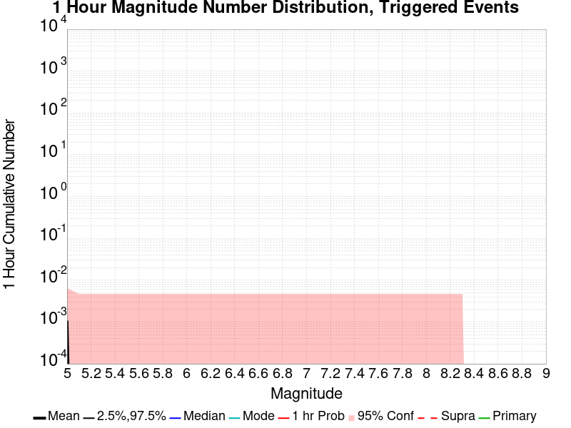
| Mag | Mean | 2.5 %ile | 97.5 %ile | Median | Mode | 1 hr Probability | 1 hr Prob 95% Conf | 1 hr Supra-Seis Prob | Primary Aftershocks Mean |
|---|---|---|---|---|---|---|---|---|---|
| M≥5 | 1.00E-3 | 0.000 | 0.000 | 0.000 | 0.000 | 1.00E-3 (0.10%) | [0.01% 0.65%] | 0.000 (0.00%) | 1.00E-3 |
| M≥5.1 | 0.000 | 0.000 | 0.000 | 0.000 | 0.000 | 0.000 (0.00%) | [0.00% 0.48%] | 0.000 (0.00%) | 0.000 |
| M≥5.2 | 0.000 | 0.000 | 0.000 | 0.000 | 0.000 | 0.000 (0.00%) | [0.00% 0.48%] | 0.000 (0.00%) | 0.000 |
| M≥5.3 | 0.000 | 0.000 | 0.000 | 0.000 | 0.000 | 0.000 (0.00%) | [0.00% 0.48%] | 0.000 (0.00%) | 0.000 |
| M≥5.4 | 0.000 | 0.000 | 0.000 | 0.000 | 0.000 | 0.000 (0.00%) | [0.00% 0.48%] | 0.000 (0.00%) | 0.000 |
| M≥5.5 | 0.000 | 0.000 | 0.000 | 0.000 | 0.000 | 0.000 (0.00%) | [0.00% 0.48%] | 0.000 (0.00%) | 0.000 |
| M≥5.6 | 0.000 | 0.000 | 0.000 | 0.000 | 0.000 | 0.000 (0.00%) | [0.00% 0.48%] | 0.000 (0.00%) | 0.000 |
| M≥5.7 | 0.000 | 0.000 | 0.000 | 0.000 | 0.000 | 0.000 (0.00%) | [0.00% 0.48%] | 0.000 (0.00%) | 0.000 |
| M≥5.8 | 0.000 | 0.000 | 0.000 | 0.000 | 0.000 | 0.000 (0.00%) | [0.00% 0.48%] | 0.000 (0.00%) | 0.000 |
| M≥5.9 | 0.000 | 0.000 | 0.000 | 0.000 | 0.000 | 0.000 (0.00%) | [0.00% 0.48%] | 0.000 (0.00%) | 0.000 |
| M≥6 | 0.000 | 0.000 | 0.000 | 0.000 | 0.000 | 0.000 (0.00%) | [0.00% 0.48%] | 0.000 (0.00%) | 0.000 |
| M≥6.1 | 0.000 | 0.000 | 0.000 | 0.000 | 0.000 | 0.000 (0.00%) | [0.00% 0.48%] | 0.000 (0.00%) | 0.000 |
| M≥6.2 | 0.000 | 0.000 | 0.000 | 0.000 | 0.000 | 0.000 (0.00%) | [0.00% 0.48%] | 0.000 (0.00%) | 0.000 |
| M≥6.3 | 0.000 | 0.000 | 0.000 | 0.000 | 0.000 | 0.000 (0.00%) | [0.00% 0.48%] | 0.000 (0.00%) | 0.000 |
| M≥6.4 | 0.000 | 0.000 | 0.000 | 0.000 | 0.000 | 0.000 (0.00%) | [0.00% 0.48%] | 0.000 (0.00%) | 0.000 |
| M≥6.5 | 0.000 | 0.000 | 0.000 | 0.000 | 0.000 | 0.000 (0.00%) | [0.00% 0.48%] | 0.000 (0.00%) | 0.000 |
| M≥6.6 | 0.000 | 0.000 | 0.000 | 0.000 | 0.000 | 0.000 (0.00%) | [0.00% 0.48%] | 0.000 (0.00%) | 0.000 |
| M≥6.7 | 0.000 | 0.000 | 0.000 | 0.000 | 0.000 | 0.000 (0.00%) | [0.00% 0.48%] | 0.000 (0.00%) | 0.000 |
| M≥6.8 | 0.000 | 0.000 | 0.000 | 0.000 | 0.000 | 0.000 (0.00%) | [0.00% 0.48%] | 0.000 (0.00%) | 0.000 |
| M≥6.9 | 0.000 | 0.000 | 0.000 | 0.000 | 0.000 | 0.000 (0.00%) | [0.00% 0.48%] | 0.000 (0.00%) | 0.000 |
| M≥7 | 0.000 | 0.000 | 0.000 | 0.000 | 0.000 | 0.000 (0.00%) | [0.00% 0.48%] | 0.000 (0.00%) | 0.000 |
| M≥7.1 | 0.000 | 0.000 | 0.000 | 0.000 | 0.000 | 0.000 (0.00%) | [0.00% 0.48%] | 0.000 (0.00%) | 0.000 |
| M≥7.2 | 0.000 | 0.000 | 0.000 | 0.000 | 0.000 | 0.000 (0.00%) | [0.00% 0.48%] | 0.000 (0.00%) | 0.000 |
| M≥7.3 | 0.000 | 0.000 | 0.000 | 0.000 | 0.000 | 0.000 (0.00%) | [0.00% 0.48%] | 0.000 (0.00%) | 0.000 |
| M≥7.4 | 0.000 | 0.000 | 0.000 | 0.000 | 0.000 | 0.000 (0.00%) | [0.00% 0.48%] | 0.000 (0.00%) | 0.000 |
| M≥7.5 | 0.000 | 0.000 | 0.000 | 0.000 | 0.000 | 0.000 (0.00%) | [0.00% 0.48%] | 0.000 (0.00%) | 0.000 |
| M≥7.6 | 0.000 | 0.000 | 0.000 | 0.000 | 0.000 | 0.000 (0.00%) | [0.00% 0.48%] | 0.000 (0.00%) | 0.000 |
| M≥7.7 | 0.000 | 0.000 | 0.000 | 0.000 | 0.000 | 0.000 (0.00%) | [0.00% 0.48%] | 0.000 (0.00%) | 0.000 |
| M≥7.8 | 0.000 | 0.000 | 0.000 | 0.000 | 0.000 | 0.000 (0.00%) | [0.00% 0.48%] | 0.000 (0.00%) | 0.000 |
| M≥7.9 | 0.000 | 0.000 | 0.000 | 0.000 | 0.000 | 0.000 (0.00%) | [0.00% 0.48%] | 0.000 (0.00%) | 0.000 |
| M≥8 | 0.000 | 0.000 | 0.000 | 0.000 | 0.000 | 0.000 (0.00%) | [0.00% 0.48%] | 0.000 (0.00%) | 0.000 |
| M≥8.1 | 0.000 | 0.000 | 0.000 | 0.000 | 0.000 | 0.000 (0.00%) | [0.00% 0.48%] | 0.000 (0.00%) | 0.000 |
| M≥8.2 | 0.000 | 0.000 | 0.000 | 0.000 | 0.000 | 0.000 (0.00%) | [0.00% 0.48%] | 0.000 (0.00%) | 0.000 |
| M≥8.3 | 0.000 | 0.000 | 0.000 | 0.000 | 0.000 | 0.000 (0.00%) | [0.00% 0.48%] | 0.000 (0.00%) | 0.000 |
| M≥8.4 | 0.000 | 0.000 | 0.000 | 0.000 | 0.000 | 0.000 (0.00%) | [0.00% 0.48%] | 0.000 (0.00%) | 0.000 |
| M≥8.5 | 0.000 | 0.000 | 0.000 | 0.000 | 0.000 | 0.000 (0.00%) | [0.00% 0.48%] | 0.000 (0.00%) | 0.000 |
| M≥8.6 | 0.000 | 0.000 | 0.000 | 0.000 | 0.000 | 0.000 (0.00%) | [0.00% 0.48%] | 0.000 (0.00%) | 0.000 |
| M≥8.7 | 0.000 | 0.000 | 0.000 | 0.000 | 0.000 | 0.000 (0.00%) | [0.00% 0.48%] | 0.000 (0.00%) | 0.000 |
| M≥8.8 | 0.000 | 0.000 | 0.000 | 0.000 | 0.000 | 0.000 (0.00%) | [0.00% 0.48%] | 0.000 (0.00%) | 0.000 |
| M≥8.9 | 0.000 | 0.000 | 0.000 | 0.000 | 0.000 | 0.000 (0.00%) | [0.00% 0.48%] | 0.000 (0.00%) | 0.000 |
| M≥9 | 0.000 | 0.000 | 0.000 | 0.000 | 0.000 | 0.000 (0.00%) | [0.00% 0.48%] | 0.000 (0.00%) | 0.000 |
These plots show how the probability of ruptures of various magnitudes within 100km of any scenario rupture changes over time

| Forecast Duration | UCERF3-ETAS [95% Conf] | UCERF3-ETAS Triggered Only | UCERF3-TD | UCERF3-ETAS/TD Gain | UCERF3-TI |
|---|---|---|---|---|---|
| 1 Hour | 2.00E-3 [1.05E-3 - 7.46E-3] | 1.00E-3 | 9.99E-4 | 2 | 9.82E-4 |
| 1 Day | 0.032 [0.027 - 0.040] | 8.00E-3 | 0.024 | 1.33 | 0.023 |
| 1 Week | 0.185 [0.176 - 0.197] | 0.036 | 0.155 | 1.2 | 0.152 |
| 1 Month | 0.567 [0.558 - 0.577] | 0.111 | 0.513 | 1.11 | 0.507 |
| 1 Year | 1.000 [1.000 - 1.000] | 0.707 | 1.000 | 1 | 1.000 |
| 10 Years | 1.000 [1.000 - 1.000] | 1.000 | 1.000 | 1 | 1.000 |
| 30 Years | 1.000 [1.000 - 1.000] | 1.000 | 1.000 | 1 | 1.000 |
| 100 Years | 1.000 [1.000 - 1.000] | 1.000 | 1.000 | 1 | 1.000 |

| Forecast Duration | UCERF3-ETAS [95% Conf] | UCERF3-ETAS Triggered Only | UCERF3-TD | UCERF3-ETAS/TD Gain | UCERF3-TI |
|---|---|---|---|---|---|
| 1 Hour | 1.13E-4 [1.13E-4 - 4.88E-3] | 0.000 | 1.13E-4 | 1 | 9.74E-5 |
| 1 Day | 3.70E-3 [2.76E-3 - 9.16E-3] | 1.00E-3 | 2.71E-3 | 1.37 | 2.33E-3 |
| 1 Week | 0.022 [0.020 - 0.028] | 3.00E-3 | 0.019 | 1.16 | 0.016 |
| 1 Month | 0.086 [0.082 - 0.094] | 9.00E-3 | 0.078 | 1.11 | 0.068 |
| 1 Year | 0.670 [0.663 - 0.678] | 0.111 | 0.628 | 1.07 | 0.574 |
| 10 Years | 1.000 [1.000 - 1.000] | 0.586 | 1.000 | 1 | 1.000 |
| 30 Years | 1.000 [1.000 - 1.000] | 0.858 | 1.000 | 1 | 1.000 |
| 100 Years | 1.000 [1.000 - 1.000] | 0.980 | 1.000 | 1 | 1.000 |
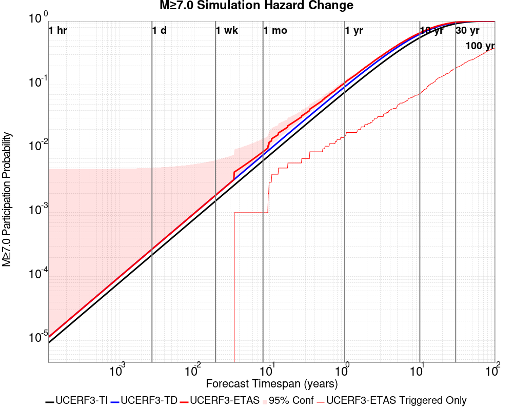
| Forecast Duration | UCERF3-ETAS [95% Conf] | UCERF3-ETAS Triggered Only | UCERF3-TD | UCERF3-ETAS/TD Gain | UCERF3-TI |
|---|---|---|---|---|---|
| 1 Hour | 1.12E-5 [1.12E-5 - 4.78E-3] | 0.000 | 1.12E-5 | 1 | 9.08E-6 |
| 1 Day | 2.68E-4 [2.68E-4 - 5.04E-3] | 0.000 | 2.68E-4 | 1 | 2.18E-4 |
| 1 Week | 1.87E-3 [1.87E-3 - 6.63E-3] | 0.000 | 1.87E-3 | 1 | 1.52E-3 |
| 1 Month | 8.99E-3 [8.05E-3 - 0.014] | 1.00E-3 | 8.00E-3 | 1.12 | 6.52E-3 |
| 1 Year | 0.108 [0.102 - 0.117] | 0.016 | 0.093 | 1.16 | 0.076 |
| 10 Years | 0.652 [0.647 - 0.659] | 0.074 | 0.625 | 1.04 | 0.549 |
| 30 Years | 0.956 [0.955 - 0.958] | 0.181 | 0.947 | 1.01 | 0.908 |
| 100 Years | 1.000 [1.000 - 1.000] | 0.377 | 1.000 | 1 | 1.000 |
| Forecast Duration | UCERF3-ETAS [95% Conf] | UCERF3-ETAS Triggered Only | UCERF3-TD | UCERF3-ETAS/TD Gain | UCERF3-TI |
|---|---|---|---|---|---|
| 1 Hour | 2.61E-7 [2.61E-7 - 4.77E-3] | 0.000 | 2.61E-7 | 1 | 2.20E-7 |
| 1 Day | 6.27E-6 [6.27E-6 - 4.78E-3] | 0.000 | 6.27E-6 | 1 | 5.27E-6 |
| 1 Week | 4.39E-5 [4.39E-5 - 4.81E-3] | 0.000 | 4.39E-5 | 1 | 3.69E-5 |
| 1 Month | 1.88E-4 [1.88E-4 - 4.96E-3] | 0.000 | 1.88E-4 | 1 | 1.58E-4 |
| 1 Year | 2.29E-3 [2.29E-3 - 7.05E-3] | 0.000 | 2.29E-3 | 1 | 1.92E-3 |
| 10 Years | 0.024 [0.024 - 0.028] | 0.000 | 0.024 | 1 | 0.019 |
| 30 Years | 0.082 [0.080 - 0.088] | 4.00E-3 | 0.078 | 1.05 | 0.056 |
| 100 Years | 0.278 [0.275 - 0.284] | 8.00E-3 | 0.272 | 1.02 | 0.175 |
| Min Mag | 1 yr Complete Catalog (including spontaneous) | 1 yr Triggered Ruptures (no spontaneous) | 500 yr Complete Catalog (including spontaneous) | 500 yr Triggered Ruptures (no spontaneous) | 500 yr Triggered Ruptures (primary aftershocks only) |
|---|---|---|---|---|---|
| All Supra. Seis. |  |  |  | ||
| M≥6.5 | 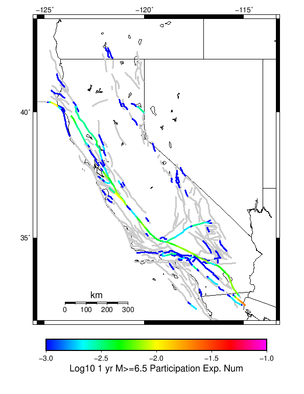 | 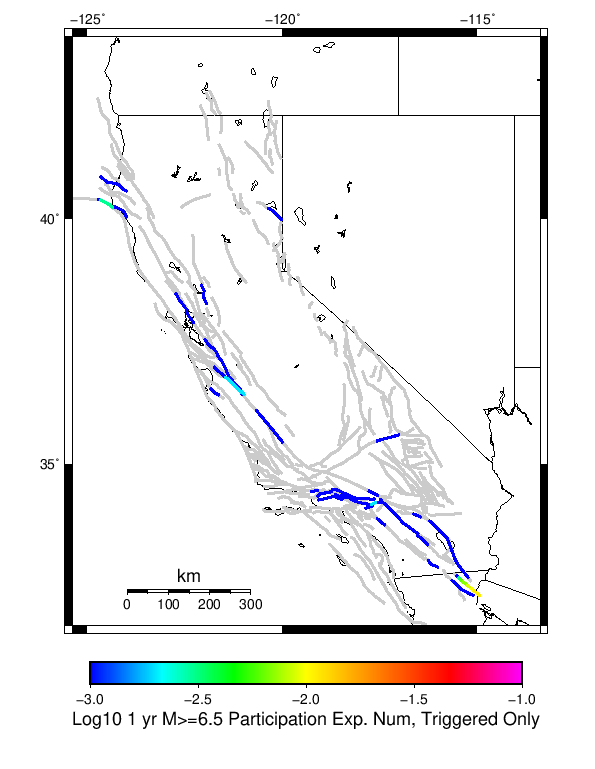 |  |  | |
| M≥7 |  |  |  | ||
| M≥7.5 | 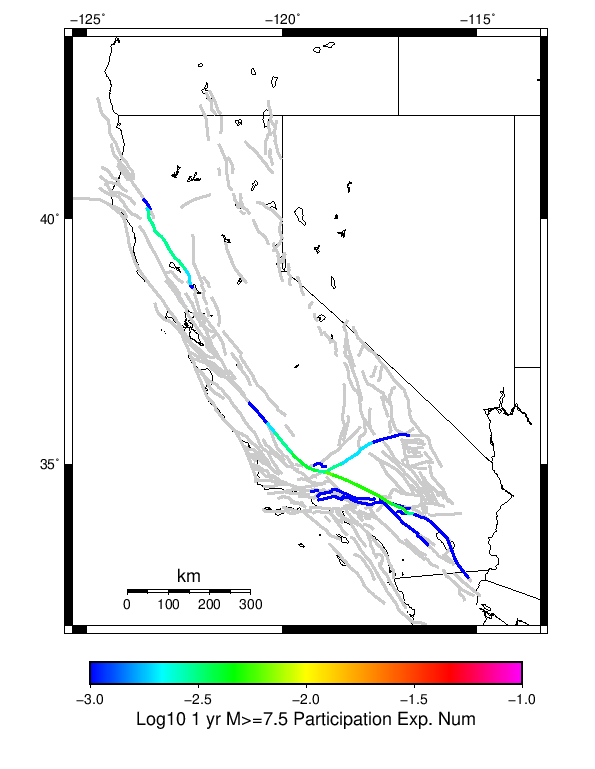 |  |  |  |  |
| M≥8 |  |  |  |  |
First 10 of 313 with matching ruptures shown
| Parent Name | Total 500 Year Mean Count | Total 1 Day Prob | Total 1 Week Prob | Total 1 Month Prob | Total 1 Year Prob | Total 500 Year Prob | Triggered 500 Year Mean Count | Triggered 1 Day Prob | Triggered 1 Week Prob | Triggered 1 Month Prob | Triggered 1 Year Prob | Triggered 500 Year Prob | Triggered 500 Year Primary Mean Count |
|---|---|---|---|---|---|---|---|---|---|---|---|---|---|
| San Andreas (Parkfield) | 21.191 | 0.0 | 0.0 | 0.0 | 0.015 | 1.0 | 2.037 | 0.0 | 0.0 | 0.0 | 0.004 | 0.708 | 0.863 |
| San Andreas (Creeping Section) 2011 CFM | 13.947 | 0.0 | 0.0 | 0.003 | 0.039 | 1.0 | 0.533 | 0.0 | 0.0 | 0.003 | 0.01 | 0.348 | 0.222 |
| San Andreas (Mojave S) | 9.397 | 0.0 | 0.0 | 0.001 | 0.021 | 1.0 | 0.857 | 0.0 | 0.0 | 0.0 | 0.005 | 0.336 | 0.348 |
| Mendocino | 8.943 | 0.0 | 0.0 | 0.0 | 0.025 | 1.0 | 0.57 | 0.0 | 0.0 | 0.0 | 0.008 | 0.388 | 0.282 |
| Cerro Prieto | 6.694 | 0.001 | 0.001 | 0.003 | 0.024 | 1.0 | 0.4 | 0.001 | 0.001 | 0.002 | 0.011 | 0.243 | 0.135 |
| Imperial | 5.892 | 0.0 | 0.001 | 0.001 | 0.011 | 1.0 | 0.287 | 0.0 | 0.0 | 0.0 | 0.002 | 0.223 | 0.133 |
| Brawley (Seismic Zone) alt 1 | 5.512 | 0.0 | 0.0 | 0.0 | 0.013 | 1.0 | 0.229 | 0.0 | 0.0 | 0.0 | 0.002 | 0.187 | 0.103 |
| Hayward (So) 2011 CFM | 4.721 | 0.0 | 0.0 | 0.001 | 0.008 | 1.0 | 0.282 | 0.0 | 0.0 | 0.0 | 0.001 | 0.205 | 0.124 |
| San Andreas (Offshore) 2011 CFM | 4.2 | 0.0 | 0.0 | 0.0 | 0.002 | 1.0 | 0.424 | 0.0 | 0.0 | 0.0 | 0.0 | 0.278 | 0.19 |
| Elsinore (Glen Ivy) rev | 3.956 | 0.0 | 0.0 | 0.0 | 0.013 | 0.985 | 0.138 | 0.0 | 0.0 | 0.0 | 0.003 | 0.082 | 0.041 |
First 10 of 306 with matching ruptures shown
| Parent Name | Total 500 Year Mean Count | Total 1 Day Prob | Total 1 Week Prob | Total 1 Month Prob | Total 1 Year Prob | Total 500 Year Prob | Triggered 500 Year Mean Count | Triggered 1 Day Prob | Triggered 1 Week Prob | Triggered 1 Month Prob | Triggered 1 Year Prob | Triggered 500 Year Prob | Triggered 500 Year Primary Mean Count |
|---|---|---|---|---|---|---|---|---|---|---|---|---|---|
| Cerro Prieto | 5.706 | 0.001 | 0.001 | 0.003 | 0.021 | 1.0 | 0.352 | 0.001 | 0.001 | 0.002 | 0.011 | 0.229 | 0.124 |
| San Andreas (Creeping Section) 2011 CFM | 5.439 | 0.0 | 0.0 | 0.0 | 0.012 | 1.0 | 0.279 | 0.0 | 0.0 | 0.0 | 0.003 | 0.217 | 0.119 |
| Mendocino | 4.564 | 0.0 | 0.0 | 0.0 | 0.01 | 0.999 | 0.378 | 0.0 | 0.0 | 0.0 | 0.003 | 0.289 | 0.181 |
| Imperial | 4.128 | 0.0 | 0.0 | 0.0 | 0.007 | 1.0 | 0.182 | 0.0 | 0.0 | 0.0 | 0.001 | 0.153 | 0.083 |
| Hayward (So) 2011 CFM | 4.014 | 0.0 | 0.0 | 0.001 | 0.007 | 0.998 | 0.23 | 0.0 | 0.0 | 0.0 | 0.001 | 0.174 | 0.097 |
| Brawley (Seismic Zone) alt 1 | 3.946 | 0.0 | 0.0 | 0.0 | 0.007 | 1.0 | 0.17 | 0.0 | 0.0 | 0.0 | 0.001 | 0.143 | 0.072 |
| San Andreas (Mojave S) | 3.548 | 0.0 | 0.0 | 0.0 | 0.008 | 0.998 | 0.268 | 0.0 | 0.0 | 0.0 | 0.001 | 0.185 | 0.116 |
| San Andreas (Santa Cruz Mts) 2011 CFM | 3.466 | 0.0 | 0.0 | 0.0 | 0.003 | 1.0 | 0.235 | 0.0 | 0.0 | 0.0 | 0.001 | 0.194 | 0.113 |
| San Andreas (San Bernardino N) | 3.312 | 0.0 | 0.0 | 0.0 | 0.006 | 0.995 | 0.184 | 0.0 | 0.0 | 0.0 | 0.0 | 0.136 | 0.064 |
| San Andreas (Cholame) rev | 3.04 | 0.0 | 0.0 | 0.0 | 0.007 | 1.0 | 0.283 | 0.0 | 0.0 | 0.0 | 0.001 | 0.209 | 0.13 |
First 10 of 273 with matching ruptures shown
| Parent Name | Total 500 Year Mean Count | Total 1 Day Prob | Total 1 Week Prob | Total 1 Month Prob | Total 1 Year Prob | Total 500 Year Prob | Triggered 500 Year Mean Count | Triggered 1 Day Prob | Triggered 1 Week Prob | Triggered 1 Month Prob | Triggered 1 Year Prob | Triggered 500 Year Prob | Triggered 500 Year Primary Mean Count |
|---|---|---|---|---|---|---|---|---|---|---|---|---|---|
| San Andreas (Creeping Section) 2011 CFM | 3.42 | 0.0 | 0.0 | 0.0 | 0.004 | 0.99 | 0.205 | 0.0 | 0.0 | 0.0 | 0.001 | 0.172 | 0.09 |
| San Andreas (Cholame) rev | 2.858 | 0.0 | 0.0 | 0.0 | 0.005 | 1.0 | 0.261 | 0.0 | 0.0 | 0.0 | 0.0 | 0.198 | 0.122 |
| San Andreas (Carrizo) rev | 2.836 | 0.0 | 0.0 | 0.0 | 0.005 | 1.0 | 0.252 | 0.0 | 0.0 | 0.0 | 0.0 | 0.189 | 0.121 |
| San Andreas (Santa Cruz Mts) 2011 CFM | 2.718 | 0.0 | 0.0 | 0.0 | 0.003 | 0.995 | 0.164 | 0.0 | 0.0 | 0.0 | 0.001 | 0.142 | 0.077 |
| San Andreas (Mojave S) | 2.691 | 0.0 | 0.0 | 0.0 | 0.007 | 0.996 | 0.204 | 0.0 | 0.0 | 0.0 | 0.0 | 0.159 | 0.096 |
| San Andreas (Mojave N) | 2.48 | 0.0 | 0.0 | 0.0 | 0.006 | 0.997 | 0.201 | 0.0 | 0.0 | 0.0 | 0.0 | 0.163 | 0.093 |
| San Andreas (San Bernardino N) | 2.368 | 0.0 | 0.0 | 0.0 | 0.005 | 0.979 | 0.144 | 0.0 | 0.0 | 0.0 | 0.0 | 0.121 | 0.057 |
| San Andreas (North Coast) 2011 CFM | 2.337 | 0.0 | 0.0 | 0.0 | 0.001 | 0.995 | 0.176 | 0.0 | 0.0 | 0.0 | 0.0 | 0.149 | 0.082 |
| San Andreas (Big Bend) | 2.305 | 0.0 | 0.0 | 0.0 | 0.004 | 0.993 | 0.201 | 0.0 | 0.0 | 0.0 | 0.0 | 0.165 | 0.096 |
| San Andreas (Parkfield) | 2.184 | 0.0 | 0.0 | 0.0 | 0.003 | 0.956 | 0.177 | 0.0 | 0.0 | 0.0 | 0.0 | 0.147 | 0.081 |
First 10 of 209 with matching ruptures shown
| Parent Name | Total 500 Year Mean Count | Total 1 Day Prob | Total 1 Week Prob | Total 1 Month Prob | Total 1 Year Prob | Total 500 Year Prob | Triggered 500 Year Mean Count | Triggered 1 Day Prob | Triggered 1 Week Prob | Triggered 1 Month Prob | Triggered 1 Year Prob | Triggered 500 Year Prob | Triggered 500 Year Primary Mean Count |
|---|---|---|---|---|---|---|---|---|---|---|---|---|---|
| San Andreas (Mojave N) | 2.419 | 0.0 | 0.0 | 0.0 | 0.006 | 0.997 | 0.2 | 0.0 | 0.0 | 0.0 | 0.0 | 0.162 | 0.093 |
| San Andreas (Big Bend) | 2.23 | 0.0 | 0.0 | 0.0 | 0.004 | 0.993 | 0.197 | 0.0 | 0.0 | 0.0 | 0.0 | 0.162 | 0.094 |
| San Andreas (Mojave S) | 2.202 | 0.0 | 0.0 | 0.0 | 0.005 | 0.991 | 0.164 | 0.0 | 0.0 | 0.0 | 0.0 | 0.136 | 0.079 |
| San Andreas (Carrizo) rev | 2.104 | 0.0 | 0.0 | 0.0 | 0.004 | 0.988 | 0.184 | 0.0 | 0.0 | 0.0 | 0.0 | 0.152 | 0.09 |
| San Andreas (Cholame) rev | 2.014 | 0.0 | 0.0 | 0.0 | 0.003 | 0.981 | 0.177 | 0.0 | 0.0 | 0.0 | 0.0 | 0.148 | 0.086 |
| San Andreas (North Coast) 2011 CFM | 1.845 | 0.0 | 0.0 | 0.0 | 0.0 | 0.984 | 0.13 | 0.0 | 0.0 | 0.0 | 0.0 | 0.118 | 0.057 |
| San Andreas (San Bernardino N) | 1.817 | 0.0 | 0.0 | 0.0 | 0.005 | 0.945 | 0.112 | 0.0 | 0.0 | 0.0 | 0.0 | 0.097 | 0.046 |
| San Andreas (Creeping Section) 2011 CFM | 1.708 | 0.0 | 0.0 | 0.0 | 0.001 | 0.886 | 0.116 | 0.0 | 0.0 | 0.0 | 0.0 | 0.107 | 0.052 |
| San Andreas (Parkfield) | 1.547 | 0.0 | 0.0 | 0.0 | 0.002 | 0.893 | 0.116 | 0.0 | 0.0 | 0.0 | 0.0 | 0.101 | 0.055 |
| San Andreas (Peninsula) 2011 CFM | 1.509 | 0.0 | 0.0 | 0.0 | 0.0 | 0.925 | 0.101 | 0.0 | 0.0 | 0.0 | 0.0 | 0.093 | 0.049 |
First 10 of 61 with matching ruptures shown
| Parent Name | Total 500 Year Mean Count | Total 1 Day Prob | Total 1 Week Prob | Total 1 Month Prob | Total 1 Year Prob | Total 500 Year Prob | Triggered 500 Year Mean Count | Triggered 1 Day Prob | Triggered 1 Week Prob | Triggered 1 Month Prob | Triggered 1 Year Prob | Triggered 500 Year Prob | Triggered 500 Year Primary Mean Count |
|---|---|---|---|---|---|---|---|---|---|---|---|---|---|
| San Andreas (Mojave N) | 0.685 | 0.0 | 0.0 | 0.0 | 0.0 | 0.557 | 0.041 | 0.0 | 0.0 | 0.0 | 0.0 | 0.04 | 0.019 |
| San Andreas (Carrizo) rev | 0.683 | 0.0 | 0.0 | 0.0 | 0.0 | 0.555 | 0.042 | 0.0 | 0.0 | 0.0 | 0.0 | 0.041 | 0.02 |
| San Andreas (Big Bend) | 0.68 | 0.0 | 0.0 | 0.0 | 0.0 | 0.552 | 0.042 | 0.0 | 0.0 | 0.0 | 0.0 | 0.041 | 0.02 |
| San Andreas (Cholame) rev | 0.675 | 0.0 | 0.0 | 0.0 | 0.0 | 0.551 | 0.043 | 0.0 | 0.0 | 0.0 | 0.0 | 0.042 | 0.02 |
| San Andreas (Mojave S) | 0.673 | 0.0 | 0.0 | 0.0 | 0.0 | 0.55 | 0.041 | 0.0 | 0.0 | 0.0 | 0.0 | 0.04 | 0.019 |
| San Andreas (San Bernardino N) | 0.645 | 0.0 | 0.0 | 0.0 | 0.0 | 0.534 | 0.04 | 0.0 | 0.0 | 0.0 | 0.0 | 0.039 | 0.018 |
| San Andreas (Parkfield) | 0.59 | 0.0 | 0.0 | 0.0 | 0.0 | 0.492 | 0.035 | 0.0 | 0.0 | 0.0 | 0.0 | 0.034 | 0.017 |
| San Andreas (Creeping Section) 2011 CFM | 0.536 | 0.0 | 0.0 | 0.0 | 0.0 | 0.452 | 0.034 | 0.0 | 0.0 | 0.0 | 0.0 | 0.033 | 0.017 |
| San Andreas (Santa Cruz Mts) 2011 CFM | 0.369 | 0.0 | 0.0 | 0.0 | 0.0 | 0.33 | 0.021 | 0.0 | 0.0 | 0.0 | 0.0 | 0.021 | 0.009 |
| San Andreas (Peninsula) 2011 CFM | 0.318 | 0.0 | 0.0 | 0.0 | 0.0 | 0.292 | 0.017 | 0.0 | 0.0 | 0.0 | 0.0 | 0.017 | 0.008 |
The first 5 sections (sorted by trigger rate) are plotted below. All fault MPDs are available here
| 1 Week | 1 Month | 1 Year | 500 Year |
|---|---|---|---|
 |  |  |  |
 |  | 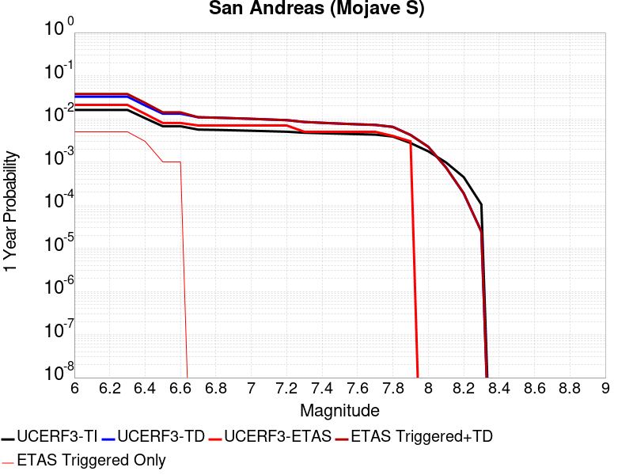 |  |
 |  |  |  |
 |  |  |  |
 |  |  | 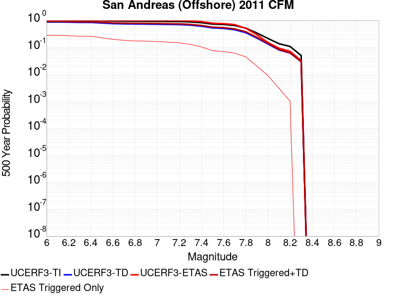 |
| Min Mag | Complete Catalog (including spontaneous) | Triggered Ruptures (no spontaneous) | Triggered Ruptures (primary aftershocks only) |
|---|---|---|---|
| M≥5 |  |  |  |
| M≥6 | 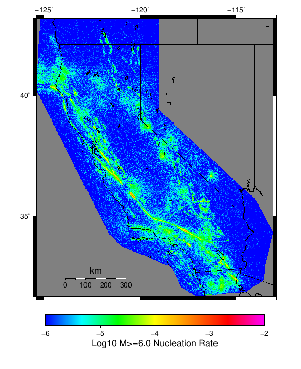 |  |  |
| M≥7 |  |  |  |
{
"numSimulations": 1000,
"duration": 500.0,
"startYear": 2012,
"includeSpontaneous": true,
"randomSeed": 123456789,
"binaryOutput": true,
"binaryOutputFilters": [
{
"prefix": "results_complete",
"descendantsOnly": false
},
{
"prefix": "results_m5_preserve_chain",
"minMag": 5.0,
"preserveChainBelowMag": true,
"descendantsOnly": false
},
{
"prefix": "results_triggered_descendants",
"descendantsOnly": true
}
],
"forceRecalc": false,
"simulationName": "Start 2012, 500 yr, kCOV\u003d1.5, Spontaneous, Historical Catalog",
"numRetries": 3,
"outputDir": "${ETAS_SIM_DIR}/2019_10_29-Start2012_500yr_kCOV1p5_Spontaneous_HistoricalCatalog",
"triggerCatalog": "${ETAS_LAUNCHER}/inputs/u3_historical_catalog.txt",
"triggerCatalogSurfaceMappings": "${ETAS_LAUNCHER}/inputs/u3_historical_catalog_finite_fault_mappings.xml",
"treatTriggerCatalogAsSpontaneous": false,
"cacheDir": "${ETAS_LAUNCHER}/inputs/cache_fm3p1_ba",
"fssFile": "${ETAS_LAUNCHER}/inputs/2013_05_10-ucerf3p3-production-10runs_COMPOUND_SOL_FM3_1_SpatSeisU3_MEAN_BRANCH_AVG_SOL.zip",
"probModel": "FULL_TD",
"applySubSeisForSupraNucl": true,
"totRateScaleFactor": 1.14,
"gridSeisCorr": true,
"timeIndependentERF": false,
"griddedOnly": false,
"imposeGR": false,
"includeIndirectTriggering": true,
"gridSeisDiscr": 0.1,
"catalogCompletenessModel": "RELAXED",
"etas_k_cov": 1.5,
"configCommand": "u3etas_config_builder.sh --start-year 2012 --num-simulations 1000 --duration-years 500 --include-spontaneous --historical-catalog --etas-k-cov 1.5 --random-seed 123456789 --hpc-site USC_HPC --nodes 36 --hours 24 --queue scec",
"configTime": 1572354013349
}